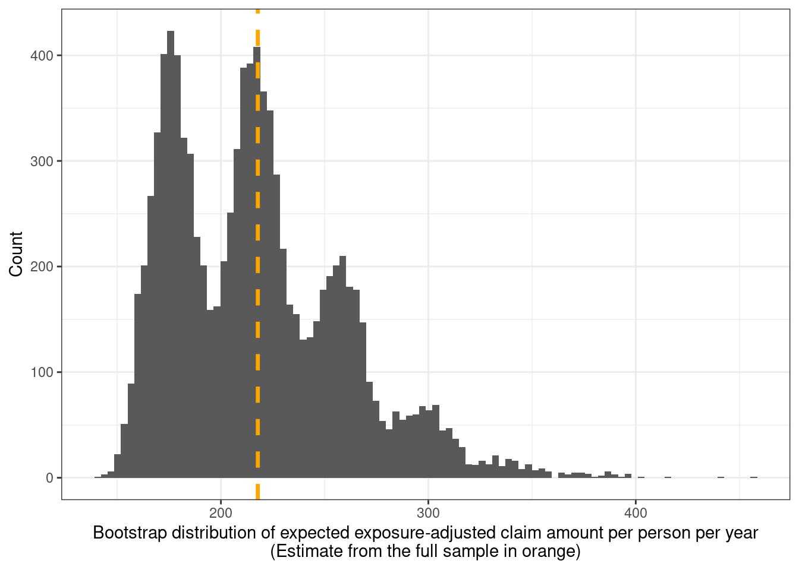
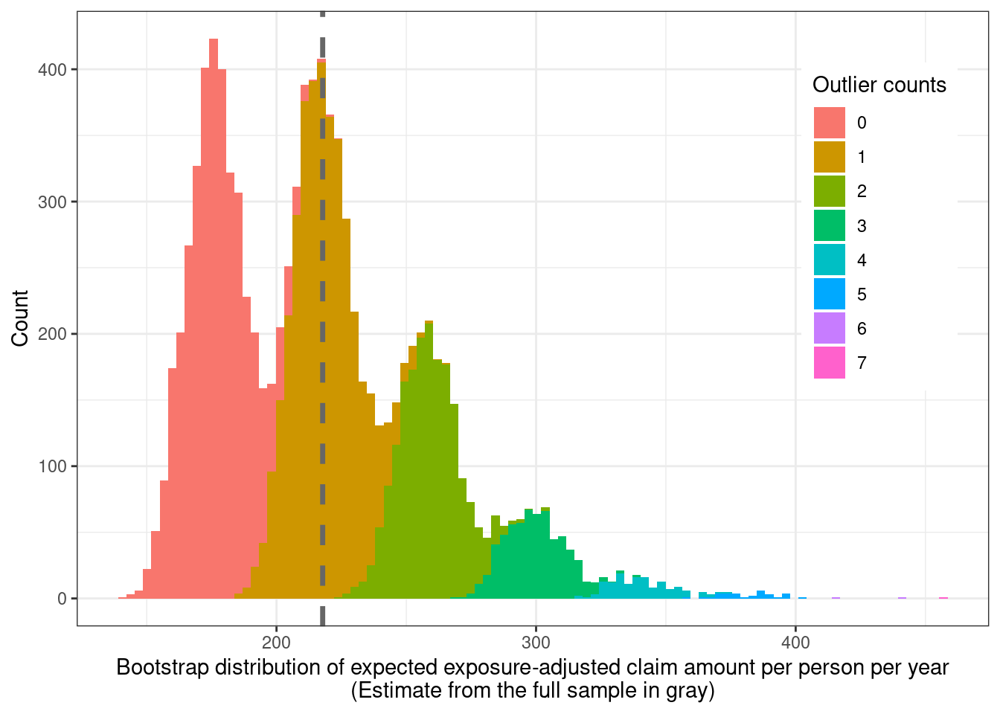
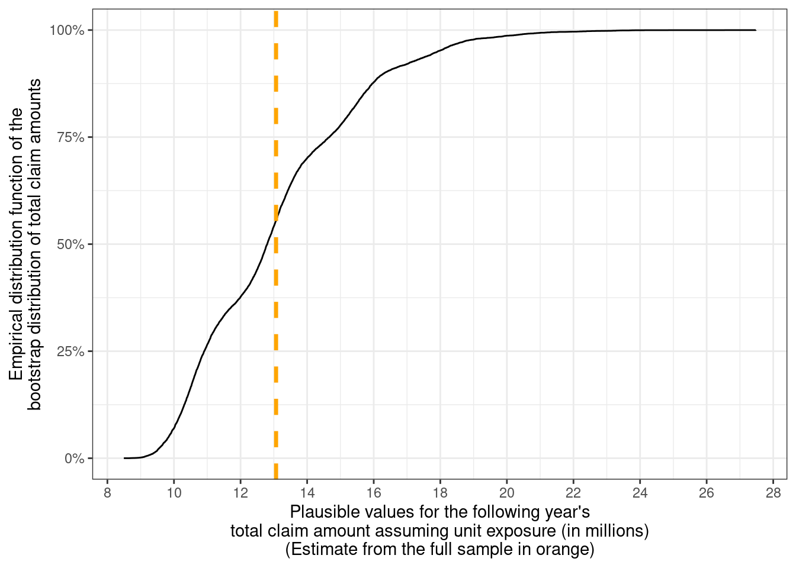
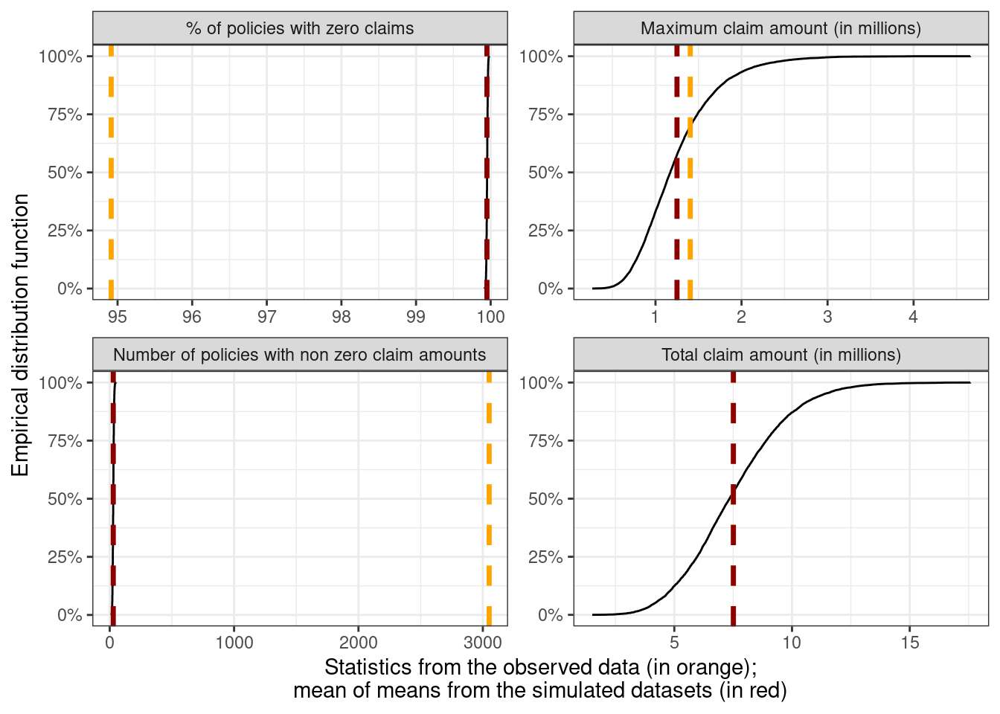
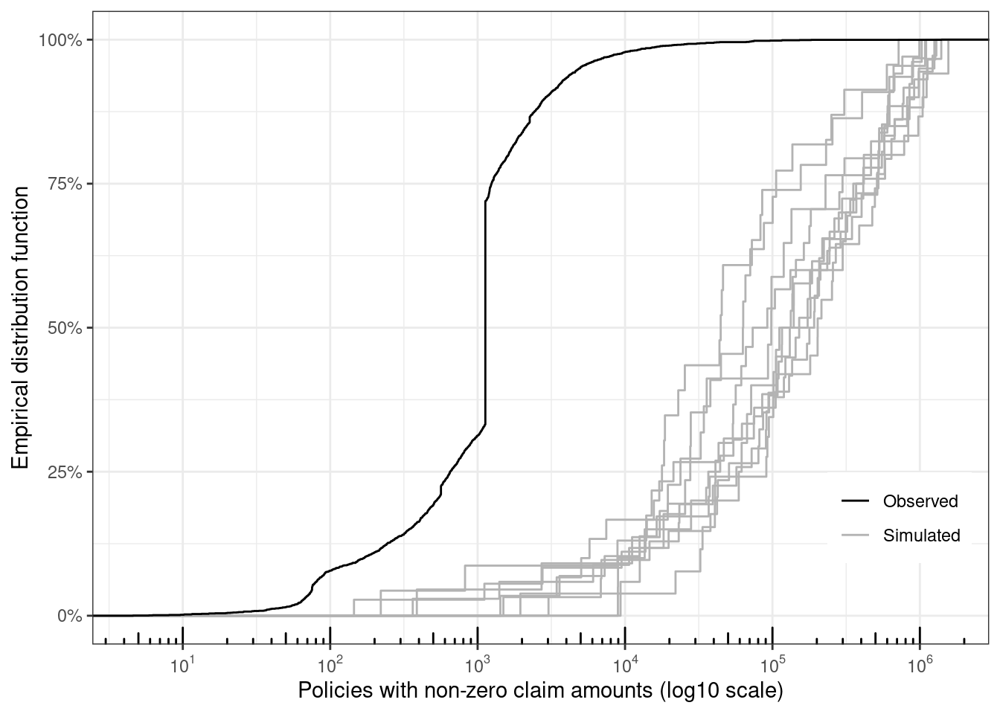
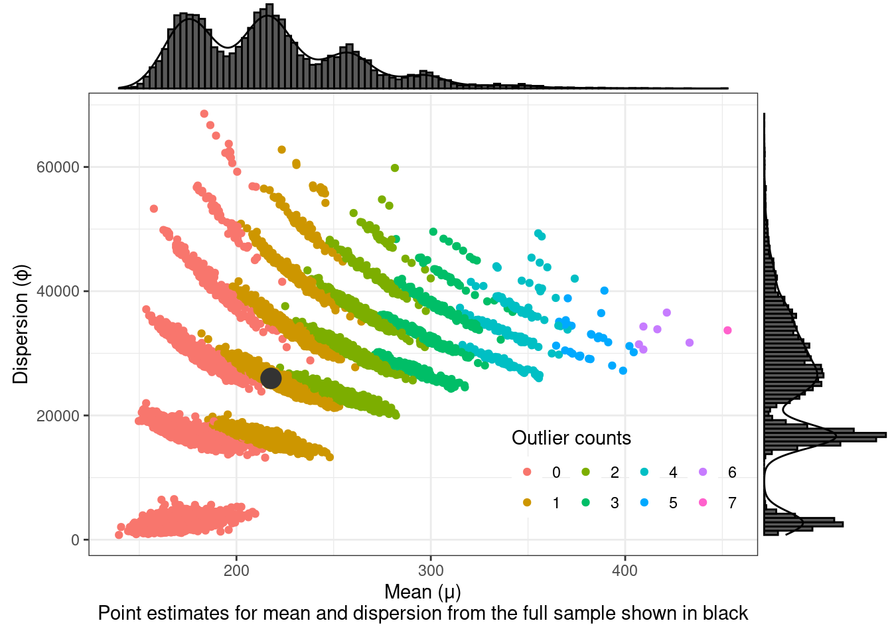
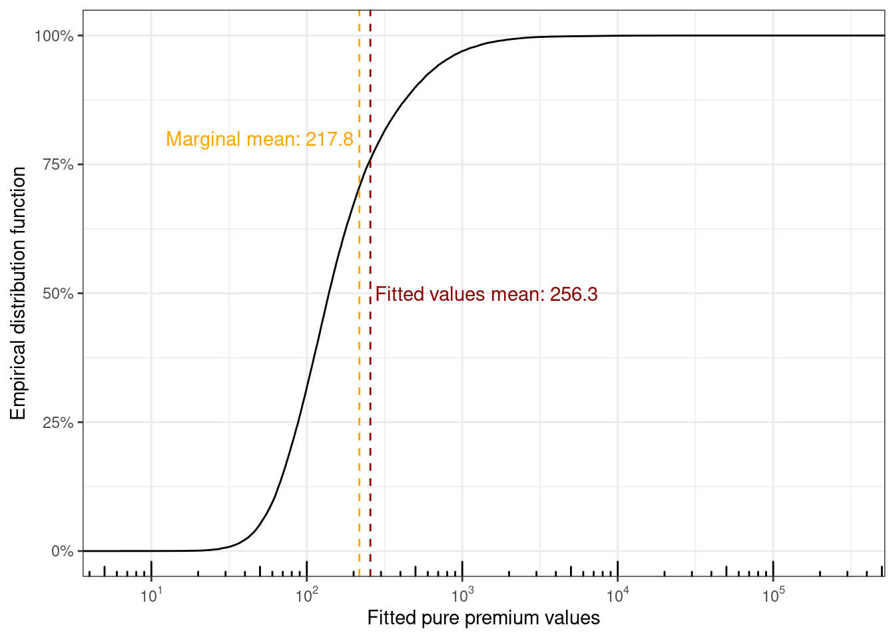
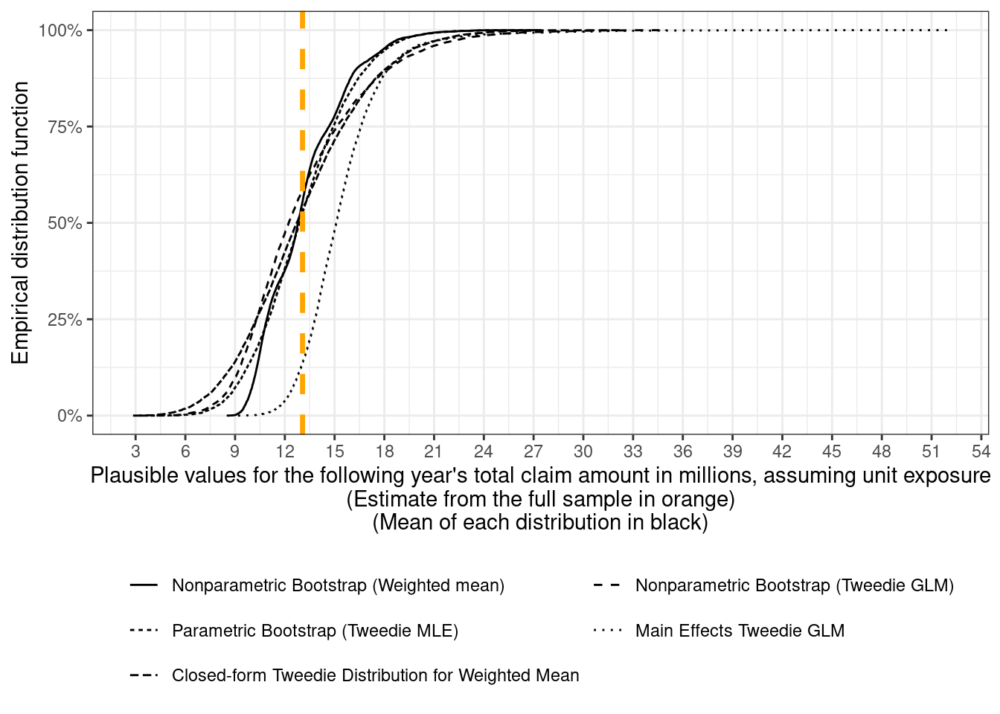

This post is about fitting a handful of different models to a subset of a popular car-insurance claims data available online. Plausible future data values can be simulated from the fitted models and used for downstream tasks. Simulated values from the fitted models can also be compared with the actual observed data as a sanity check.
I’ve never worked in the field of insurance, but I’ve been wanting to dive into Tweedie models for a while, since non-negative (response) variables with lots of zeroes and positive skew are pretty common and show up in many diverse disciplines such across the social sciences, insurance, biology, etc.
What piqued my interest in insurance data is that the response variable can additionally have very large “outliers”. In other fields, outliers resulting from corrupted data or measurement errors can be discarded from the analysis, or robust estimators / loss functions can be used for modelling. However, in such settings, it may not necessarily make sense to discard such values because they likely represent the true cost of damages from accidents1 — which an insurer may be on the hook for.
1 “Well actually, …” - some actuary probably
This is also a bit of an unusual post in the sense that I’m using ideas I’ve encountered in Bayesian statistics but with frequentist methods. Sure, I could just fit Bayesian models, but that’s not the point here. To wrap my head around the ideas utilized in this post, I’m keeping things relatively simple by eschewing more complex predictive models like (my favourite) boosted trees, and using a single model for the data instead of hurdle models that split the response variable into a zero and a non-zero part and model them separately.
Before going further, I’m going to load some packages and the claims data used for this post.
library(tidyverse)
── Attaching core tidyverse packages ──────────────────────── tidyverse 2.0.0 ──
✔ dplyr 1.1.4 ✔ readr 2.1.5
✔ forcats 1.0.0 ✔ stringr 1.5.1
✔ ggplot2 3.5.1 ✔ tibble 3.2.1
✔ lubridate 1.9.3 ✔ tidyr 1.3.1
✔ purrr 1.0.2
── Conflicts ────────────────────────────────────────── tidyverse_conflicts() ──
✖ dplyr::filter() masks stats::filter()
✖ dplyr::lag() masks stats::lag()
ℹ Use the conflicted package (<http://conflicted.r-lib.org/>) to force all conflicts to become errors
# functions from these packages are used via namespace::fun() # library(tweedie)# library(magrittr, include.only = "%$%") # importing the exposition pipe# library(glue)# library(scales)# library(broom)# library(boot)# library(ggExtra)# library(statmod)theme_set(theme_bw())claims <-read_csv("claims_subset.csv", show_col_types =FALSE) %>%glimpse()
The most important variables are IDpol — which uniquely identifies individual policies (denoted with a subscript \(i\)), Exposure — which indicates the duration (in years) that the policy is in effect (denoted by \(w_i\)), and ClaimAmount — which is the total monetary amount of the claims filed by each policyholder (denoted by \(z_i\)). Some of the other variables will be later used for building richer models.
Looking at the deciles of the exposure distribution for these 60,000 policies
many of the values are less than one, which means those policies were in effect for less than a year. All of these are non-zero as they should be, but more than 60% have a duration of less than one year. The smallest exposure is for a day, since \(1/365 \approx 0.02739\).
Assuming a closed cohort — i.e., all these contracts get renewed the following year and no new contracts are issued — the goal is to predict the total claim amount for each policy for the following year. The distribution of individual claim amounts is highly skewed and has a lot of zeroes (\(\approx 94\%\)), as assessed by some quantiles
Since I’ve worked in epidemiology these past few years, a natural quantity (i.e., estimand) similar to incidence rates (i.e., the number of events generated from some population divided by the total follow-up time for individuals with different follow-up durations or periods) seems to be a good starting step. This can be expressed as the sum of the individual claim amounts \(z_i\) divided by the sum of policy durations \(w_i\), and denoted by the expectation operator \(\mathbb{E}\).
\[
\mathbb{E}\big[\text{Claim Amount}_i\big] = \frac{\sum_i z_i}{\sum_i w_i}
\]It’s a way of equally dividing the total claims generated from some population at risk among the individuals in that population. Each of the individual claim amounts is a random variable, so is expected to vary from person to person, as well as from year to year for the same person.
Taking the regular (arithmetic) mean — which is the same as setting \(w_i = 1\) for each individual in the formula above — underestimates the expected claim cost as many individuals are observed for less than a year. It is expected that had they been observed for the full year, their claim amounts would have been larger. A similar argument applies in the case of individuals with \(w_i > 1\), although in this case we’d be overestimating instead of underestimating.
For the data above, this comes out to about 125 per person per year assuming \(w_i = 1\), and to about 218 per person per year using the observed \(w_i\)’s.
# A tibble: 7 × 2
name value
<chr> <chr>
1 total_amount 7507466.02
2 max_claim_amount 1404185.52
3 n_policies 60000
4 person_time 34471.8546
5 mean_person_time 0.5745
6 mean 125.1244
7 avg_claim_cost 217.7854
So now we have an estimate for the expected claim amount per person per year, even though we can expect most policies to generate zero claims, and a few policies to generate some very large claim amounts based on the observed claims distribution. This expected claim cost estimate will be used again, so it’s assigned to a variable here.
For an insurance company, they need to ensure they have enough capital reserves to be able to pay out money for these claims, which they’re legally liable for. For the current year, the total claim amount across the policies was about 7.5 million, from a population that was on averaged exposed for 0.57 years. The total expected claim amount for this population with each person being observed for a full year is \(217.8 \times 60,000\) which comes out to about 13 million.
In this case, the sample of customers constitutes the population of interest so it may not make sense to produce uncertainty estimates for this estimated total amount for the current year. However, the claim amounts can be seen as the result of a stochastic process, so superpopulation inference on this parameter can still make sense since next year’s claim amounts may be expected to be similar, but not identical.
This is carried out here using a weird Bayesian model (a.k.a. the nonparametric bootstrap). The following code chunk generates \(B = 10,000\) resamples and calculates the expected claim amount on each resample.
Code
expected_claim_cost_fun <-function(data, indx, ...) { data <- data[indx, ] expected_value <-sum(data$ClaimAmount) /sum(data$Exposure)# this is the single / largest outlier in the data outlier_counts <-nrow(data[data$ClaimAmount ==1404185.52, ])return(c(expected_value, outlier_counts))}boot_fun <-function(data, R =100, parallel ="snow") {stopifnot(parallel %in%c("no", "snow"))# TRUE if using parallelization, otherwise FALSE simple <- parallel =="snow" boot::boot(data = data,statistic = expected_claim_cost_fun,R = R,sim ="ordinary",stype ="i",simple = simple,parallel = parallel,ncpus =18 )}# uncomment to run# boot_fit <- boot_fun(data = claims, R = 10000)# uncomment to save the results # saveRDS(boot_fit, file = "bootstrap_expected_claim_cost.rds")
This can take a while to run (even in parallel), so saved results are read back in and used to produce the following plot of the sampling distribution of the expected claim amount.
Code
boot_fit <-readRDS("bootstrap_expected_claim_cost.rds")# convert the results into a data frameboot_dist <-tibble(expected_claim_cost = boot_fit$t[, 1],outlier_counts = boot_fit$t[, 2],# used for coloring / facetting plots#`Outlier counts` = paste0(boot_fit$t[, 2], " replicates")`Outlier counts`=factor(boot_fit$t[, 2]))boot_dist %>%ggplot(aes(x = expected_claim_cost)) +geom_histogram(bins =100) +geom_vline(xintercept = expected_claim_amount, color ="orange", linewidth =1.2, linetype ="dashed" ) +xlab( glue::glue("Bootstrap distribution of expected ", "exposure-adjusted claim amount ", "per person per year", "\n(Estimate from the full sample in orange)") ) +ylab("Count")

That’s an unusual looking bootstrap distribution. Googling led me to this stackexchange thread which indicates similar behaviour arising due to outlier(s) and small sample sizes. Policies with the largest top-6 claim amounts are
of which the largest at 1.4 million is roughly 8 times larger than the next largest value. It is interesting that despite having a large sample size of 60,000 (or 34,500 policy-years), this outlier is large enough relative to the sample size to cause the multimodality seen here.
The function used to calculate the expected claim amount on each bootstrap sample can be modified to also count the number of times the maximum value from the original sample shows up in each bootstrap sample. The bootstrap distribution is plotted again but this time colored by the number of times the maximum amount shows up in a replicate.
Code
boot_dist %>%ggplot(aes(x = expected_claim_cost,fill =`Outlier counts`)) +geom_histogram(bins =100) +geom_vline(xintercept = expected_claim_amount, color ="gray40",linewidth =1.2, linetype ="dashed") +xlab( glue::glue("Bootstrap distribution of expected ", "exposure-adjusted claim amount ", "per person per year", "\n(Estimate from the full sample in gray)") ) +ylab("Count") +theme(legend.position ="inside",#legend.background = element_blank(),legend.position.inside =c(0.88, 0.65) )

So this makes sense. Resamples with more repeats of the maximum claim amount have higher expected claim cost amounts.
Since the total claim amount for the following year is of interest, the bootstrap distribution can be multiplied by the number of policy holders to get a distribution of plausible values for the total claim amount for this population — which is expected to be around 13 million, but could be anywhere between 8 million to 28 million.
Code
nonparametric_bootstrap_totals <- boot_dist %>%mutate(total_claim_amount =60000* expected_claim_cost,total_claim_amount_in_millions = total_claim_amount /1e6,method ="Nonparametric Bootstrap (Weighted mean)" ) %>%select(method, total_claim_amount_in_millions)nonparametric_bootstrap_totals %>%ggplot(aes(x = total_claim_amount_in_millions)) +stat_ecdf(pad =FALSE) +geom_vline(xintercept = (6e4* expected_claim_amount) /1e6,color ="orange", linewidth =1.2, linetype ="dashed") +scale_x_continuous(breaks =seq(8, 30, 2)) +scale_y_continuous(labels = scales::label_percent()) +xlab( glue::glue("Plausible values for the ", "following year's\ntotal claim ", "amount assuming unit exposure (in millions)", "\n(Estimate from the full sample in orange)") ) +ylab( glue::glue("Empirical distribution function of the\n", "bootstrap distribution of total claim amounts") )

The empirical (cumulative) distribution function (EDF or eCDF) for the bootstrap distribution of the total claim amount from the population under unit exposure is shown above. The strong multimodality shows up as bumps in the eCDF but these seem pretty minor.
This approach ignores all the predictors in the data, and assumes that everyone has the same risk and spreads out that risk across every individual equally. However, it’s expected that the risk may differ across factors such as driver’s age, car model characteristics, region, etc. For this, we need more advanced approaches in the form of regression models.
Tweedie models
A common probability model used to model claims data — the Tweedie distribution — is characterized by the power-law mean-variance relationship \(\text{Var}[Y_i] \propto \mathbb{E}[Y_i] ^ p\) where the variance \(\text{Var}[Y_i]\) is proportional to the mean \(\mathbb{E}[Y_i]\). The Tweedie distribution with \(p \in (1, 2)\) — also known as the compound Poisson(-gamma) distribution — is commonly used to model the total cost of claims from an insurance policy. In the insurance world, it can be derived at the policy level as a model of Poisson claim frequency with the sum of claim amounts (i.e., claim severity) coming from a gamma distribution.
The Tweedie distribution has three parameters — mean (\(\mu > 0\)), dispersion (\(\sigma > 0\)) which functions as the constant of proportionality, and variance function power \(p \in (-\infty, 0] \cup [1, \infty)\). Restricting to \(p \in (1, 2)\) make sense here since we have policies with zero claim amounts in the data and \(p \notin(1, 2)\) is not suitable for modelling data with exact zeroes. The extreme of \(p = 1\) corresponds to a Poisson distribution (which has support on non-negative integers), and \(p = 2\) corresponds to a gamma distribution (which has support on positive real numbers). Special cases are also the Gaussian distribution (\(p = 0\)), and the inverse-Gaussian distribution (\(p = 3\)).
Section 4 of this paper has the clearest distinction I’ve seen between three related random variables for the \(i^{th}\) policy — \(Z_i\) is the observed total claim amount with exposure \(w_i\) (we have \(z_i\)’s in our data), \(Y_i = Z_i / w_i \sim \text{Tweedie}(\mu_i, \phi / w_i, p)\) is a derived quantity known as the pure premium under exposure \(w_i\), and \(Y^*_i \sim \text{Tweedie}(\mu_i, \phi, p)\) is the pure premium under unit exposure (so \(w_i = 1\)) which satisfies the mean-variance relationship \(\text{Var}[Y_i^*] = \phi \mathbb{E}[Y_i^*]^p\). I’m treating \(\phi\) as a constant here, but it can be modelled as a function of covariates, as is done in this paper for example.
What tripped me up while writing a previous post2 on this topic was that I kept trying to take the weighted mean of the \(z_i\) values instead of the \(y_i\) values and getting different results compared with the ratio \(\sum_i z_i / \sum_i w_i\) when they should’ve been identical. Taking the weighted mean of the \(y_i\) values leads to the same estimate as the ratio of these sums because the \(w_i\)’s cancel out in the numerator.
2 To be fair, I’d read the Yang et al. paper for that post too, but had overlooked that (subtle?) distinction.
Intercept-only regression
There are two ways of accounting for the varying exposures in a model. The first method uses pure premium \(y_i\) as the response variable and the exposure \(w_i\)’s are passed as weights to the fitting functions. The second method uses the observed amount \(z_i\) with \(w_i\) as an offset (i.e., a variable in the model with a fixed coefficient of 1). For the Tweedie model with \(p \in (1, 2)\), these two methods result in different parameter estimates (compared to the Poisson regression case where they give the same estimates). I’m sticking with the first approach here since more modelling packages across languages support model weights compared with offsets.
The following code fits an intercept-only Tweedie generalized linear model (GLM) with pure premium as the response variable and exposure as weights, and uses an identity link (link.power = 1). For this simple model, the link function shouldn’t really matter for the parameter estimate for the mean \(\mu\). The variance power is taken to be \(p = 1.6\) throughout. This is very close to the chosen value for \(p\) from calling tweedie::tweedie.profile() using the model offset formulation described in the previous paragraph. I couldn’t get this function to work for the pure premium model with weights because the log-likelihood estimates were (negative) infinite for all \(p\), and \(p = 1.8\) was the value that minimized the Tweedie deviance (including on simulated data with known \(\mu\), \(\phi\), and \(p = 1.6\)).
tweedie_intercept_only <-glm(I(ClaimAmount / Exposure) ~1,weights = Exposure,data = claims,# using link.power = 1 implies identity link for the mean parameter mufamily = statmod::tweedie(var.power =1.6, link.power =1))summary(tweedie_intercept_only)
Call:
glm(formula = I(ClaimAmount/Exposure) ~ 1, family = statmod::tweedie(var.power = 1.6,
link.power = 1), data = claims, weights = Exposure)
Coefficients:
Estimate Std. Error t value Pr(>|t|)
(Intercept) 217.8 64.4 3.382 0.000721 ***
---
Signif. codes: 0 '***' 0.001 '**' 0.01 '*' 0.05 '.' 0.1 ' ' 1
(Dispersion parameter for Tweedie family taken to be 25966.84)
Null deviance: 2144044 on 59999 degrees of freedom
Residual deviance: 2144044 on 59999 degrees of freedom
AIC: NA
Number of Fisher Scoring iterations: 3
So our best guess for the distribution of \(Y_i^*\)’s from the Tweedie class of models is \(\text{Tweedie}(\mu = 217.78..., \phi = 25966.83..., p = 1.6...)\) (where the ellipses indicate truncation). These estimates for \(\hat\mu_{\text{int}}\) and \(\hat\phi_{\text{int}}\) will be used again, so they’re stored as variables.
mu <-coef(tweedie_intercept_only)phi <- tweedie_intercept_only %>%summary() %>%pluck("dispersion")
Parametric Bootstrap
One way of getting a distribution for the statistic of interest \(T\) is the use of the parametric bootstrap. This involves drawing \(B\) samples each of size \(n\) from the fitted model, computing the statistic for each of the \(B\) samples, and using this as an estimate of the sampling distribution from which summary statistics (e.g. mean, quantiles, sd, etc.) can be computed.
The observed statistics — such as the number of claims with amounts > 0, the total claim amounts, and the largest claim amount — from the one sample of \(z_i\)’s that we have can be compared with the sampling distribution from the parametric bootstrap using the observed exposures \(w_i\).
The following code carries this out with \(B = 10,000\) where for each \(b\) we draw a vector of \(n\) claim amounts \(Z_{i, b}\) and the statistic \(\hat{T_b}\) is computed. \(Z_{i, b}\) is drawn as \(Z_{i, b} \sim w_i \times \text{Tweedie}(\hat\mu_{\text{int}}, \hat\phi_{\text{int}} / w_i, 1.6)\).
Code
# how well does the model fit the data?# a form of posterior predictive checking# ppc_obs_exposure <- map(# .x = 1:10000,# .f = ~ {# if(.x %% 100 == 0) {# print(.x)# }# set.seed(.x)# draw <- claims$Exposure * tweedie::rtweedie(60000, mu = mu,# phi = phi / claims$Exposure,# power = 1.6)# tibble(prop_zero = mean(draw == 0), sample_total = sum(draw),# sample_max = max(draw), n_nonzero = sum(draw > 0))# }) %>%# list_rbind()## saveRDS(ppc_obs_exposure, file = "ppc_obs_exposure.rds")# code takes a while to run, so we can read in the saved resultsppc_obs_exposure <-readRDS(file ="ppc_obs_exposure.rds")# summary statistics on the observed datasample_statistics_obs_exposure <- claims %>%summarise(prop_zero =mean(ClaimAmount ==0),sample_total =sum(ClaimAmount),sample_max =max(ClaimAmount),n_nonzero =sum(ClaimAmount >0) )# combine the ppc data and the original sample dataplot_data_obs_exposure <-bind_rows( ppc_obs_exposure %>%mutate(group ="sampled", .before =0), sample_statistics_obs_exposure %>%mutate(group ="observed", .before =0) ) %>%mutate(across(c(sample_total, sample_max), ~ .x /1e6),prop_zero =100* prop_zero ) %>%rename(`% of policies with zero claims`= prop_zero,`Number of policies with non zero claim amounts`= n_nonzero,`Maximum claim amount (in millions)`= sample_max,`Total claim amount (in millions)`= sample_total ) %>%pivot_longer(cols =-group, names_to ="statistic", values_to ="values")# mean of the posterior predictive distribution valuesppc_mean_obs_exposure <- plot_data_obs_exposure %>%filter(group =="sampled") %>%summarise(values =mean(values), .by = statistic) %>%mutate(across(.cols =where(is.numeric), .fns =~round(.x, 2)))# compare these visuallyplot_data_obs_exposure %>%filter(group =="sampled") %>%ggplot(aes(x = values, group = statistic)) +stat_ecdf(pad =FALSE) +# plot the sample statisticgeom_vline(data =filter(plot_data_obs_exposure, group =="observed"),aes(xintercept = values, group = statistic),color ="orange", linewidth =1.2, linetype ="dashed") +# plot the distribution meansgeom_vline(data = ppc_mean_obs_exposure,aes(xintercept = values, group = statistic),color ="red4", linewidth =1.2, linetype ="dashed") +facet_wrap(~ statistic, scales ="free") +scale_y_continuous(labels = scales::label_percent()) +xlab(glue::glue("Statistics from the observed data (in orange);","\nmean of means from the simulated datasets (in red)")) +ylab("Empirical distribution function")

What’s really interesting about this plot is that the proportion (and number) of policies with zero claim amounts is really far from the observed proportion (number) of 95% (3000) vs the mean of the sampling distribution (99% and 29). On the other hand, the observed and average total claim amounts are virtually indistinguishable, and the average maximum claim amount isn’t too far off from the observed maximum claim amount.
Given that the statistic of interest has been the total claim amount across the policies, this doesn’t seem to be a bad approach, even though the EDFs of the sampled \(Z_{i, b} > 0\)’s from the model (10 datasets shown in gray) look pretty far off from the observed distribution of \(Z_{i, \text{obs}} > 0\)’s (observed claim amounts in black)
Code
# plot eCDFs of sampled datasets with the observed datamap(.x =1:10,.f =~ {set.seed(.x) draw <- claims$Exposure * tweedie::rtweedie(60000, mu = mu,phi = phi / claims$Exposure,power =1.6)tibble(sim_id = .x, y = draw, grp ="Simulated") }) %>%list_rbind() %>%bind_rows( ., claims %>%mutate(sim_id =100, grp ="Observed") %>%select(sim_id, y = ClaimAmount, grp) ) %>%filter(y >0) %>%ggplot(aes(x = y, group = sim_id, color = grp)) +stat_ecdf() +xlab("Policies with non-zero claim amounts (log10 scale)") +ylab("Empirical distribution function") +scale_x_log10(breaks = scales::trans_breaks("log10", function(x) 10^x),labels = scales::trans_format("log10", scales::math_format(10^.x)) ) +annotation_logticks(sides ="b") +scale_y_continuous(labels = scales::percent) +scale_color_manual(values =c("Simulated"="gray70", "Observed"="Black") ) +theme(legend.title =element_blank(), legend.position ="inside",legend.position.inside =c(0.9, 0.2) )

Simulated claim amounts are orders of magnitude larger than the observed claim amounts, which is how the totals are very similar despite the very different sample sizes of policies with non-zero claim amounts. The very low number of non-zero claim amounts in the simulated datasets is what leads to the jaggedness of the distribution functions.
If the goal is to have accurate estimates for the proportion of non-zero claims, then a hurdle model mentioned earlier would be a better approach. The observed distribution has a pretty big jump at 1128.12 which shows up 1169 times in the data, so a mixture model might be more appropriate if want to have a model with approximately the same eCDF.
This approach of comparing the statistics on samples drawn from the model vs the statistics from the observed sample is the concept of posterior predictive checking (PPC). If the model adequately describes the data generating process, the distribution of all the statistics from sampled datasets should be approximately centered at the observed statistics.
For next year’s claim amount, we can repeat the same step with a slight modification — sample \(Y_{i, b}^* \sim \text{Tweedie}(\hat\mu_{\text{int}}, \hat\phi_{\text{int}}, p = 1.6)\) and calculate \(\hat{T_b} = \sum_i Y_{i, b}^*\) which ranges from about 4 to 27.5 million.
Min. 1st Qu. Median Mean 3rd Qu. Max.
3904985 11011626 12889186 13044586 14930666 27255385
Nonparametric Bootstrap
The parametric bootstrap uses the point estimate to simulate new samples. From a Bayesian point of view, this corresponds to using the Dirac delta posterior distribution with a spike at the point estimate \((\hat\mu_{\text{int}}, \hat\phi_{\text{int}})\) and ignoring the uncertainty in the parameter estimates by treating it as zero. This section extends the parametric bootstrap approach by accounting for the uncertainty in the \((\hat\mu_{\text{int}}, \hat\phi_{\text{int}})\) values.
In the first stage, a separate Tweedie model is fit to each bootstrapped sample from the original data and the estimated \((\hat\mu_{\text{int}, b}, \hat\phi_{\text{int}, b})_{b = 1}^{10,000}\) pairs are collected. These 10,000 pairs are a sample from the “poor man’s” posterior distribution for these parameters and are visualized here
Code
# bootstrap and get the joint distribution of (mu, phi)# bootstrap_mu_phi <- map_dfr(# .x = 1:10000,# .f = ~ {# if(.x %% 100 == 0) {# print(.x)# }# set.seed(.x)# data <- claims %>%# slice_sample(n = 60000, replace = TRUE)# outlier_counts <- nrow(data[data$ClaimAmount == 1404185.52, ])# mod <- data %>%# glm(# I(ClaimAmount / Exposure) ~ 1,# weights = Exposure,# data = .,# family = statmod::tweedie(var.power = 1.6, link.power = 0)# )## tibble(# mu = exp(coef(mod)),# phi = summary(mod)$dispersion,# outlier_counts = outlier_counts# )# }# )## saveRDS(bootstrap_mu_phi, file = "bootstrap_mu_phi.rds")bootstrap_mu_phi <-readRDS("bootstrap_mu_phi.rds")mu_phi_plot <- bootstrap_mu_phi %>%mutate(`Outlier counts`=factor(outlier_counts)) %>%ggplot(aes(x = mu, y = phi, color =`Outlier counts`)) +geom_point() +geom_point(data =tibble(mu = mu, phi = phi),aes(x = mu, y = phi),color ="gray20", size =5, inherit.aes =FALSE) +labs(x = glue::glue("Mean (\u03bc)\n", "Point estimates for mean and", " dispersion from the full sample ","shown in black"),y ="Dispersion (\u03d5)" ) +theme(legend.position ="inside",legend.background =element_blank(),legend.position.inside =c(0.8, 0.18) ) +guides(color =guide_legend(nrow =2))# this thorws warnings that bins are ignored, but # the correct behaviour is observed anywayggExtra::ggMarginal(p = mu_phi_plot, type ="densigram", xparams =list(bins =100), yparams =list(bins =100))

The clustering of points was initially a bit puzzling. The marginal density for the mean (top) is the same as the multimodal bootstrap distribution from a few sections above. The density for dispersion seems to be a lot less well-behaved. Coloring by the number of times that the original sample maximum claim amount is sampled in the bootstrap datasets, it’s clear that the frequency of occurrence is largely responsible for the clustering observed here.
In the second stage, a random pair \((\hat\mu_{\text{int}, b}, \hat\phi_{\text{int}, b})\) is drawn first, followed by drawing \(n\) values \(Y_{i, b}^* \sim \text{Tweedie}(\hat\mu_{\text{int}, b}, \hat\phi_{\text{int}, b}, p = 1.6)\), and summing these to get an estimate of the total claim amount \(\hat{T_b}\).
It is expected that accounting for uncertainty in the estimation of \((\hat\mu_{\text{int}}, \hat\phi_{\text{int}})\) should lead to thicker tails for the distribution of \(\hat{T_b}\)’s. The right tail now extends beyond 28 million and goes up to 34 million.
Code
# sample Y_i from the posterior predictive distribution and sum them# do this 10k times to get the posterior distribution# posterior_distribution_samples_for_total_claims <- map(# .x = 1:10000,# .f = ~ {# if(.x %% 100 == 0) {# print(.x)# }# set.seed(.x)# draw <- bootstrap_mu_phi %>%# slice_sample(n = 1)## set.seed(.x)# sum_values <- draw %$%# tweedie::rtweedie(n = 60000, mu = mu, phi = phi, power = 1.6) %>%# sum()## draw %>%# mutate(total = sum_values)# }# ) %>%# list_rbind()## saveRDS(posterior_distribution_samples_for_total_claims,# file = "posterior_distribution_samples_for_total_claims.rds")posterior_distribution_samples_for_total_claims <-readRDS(file ="posterior_distribution_samples_for_total_claims.rds")summary(posterior_distribution_samples_for_total_claims)
mu phi total
Min. :144.3 Min. : 883.9 Min. : 3244481
1st Qu.:182.1 1st Qu.:16455.5 1st Qu.:10286795
Median :213.6 Median :24801.9 Median :12234351
Mean :218.2 Mean :23607.4 Mean :13061045
3rd Qu.:243.8 3rd Qu.:31349.8 3rd Qu.:15142596
Max. :452.7 Max. :68572.1 Max. :34585477
Using properties of EDMs
This section uses two properties — sampling distribution of the weighted average, and scale invariance — of exponential dispersion models (EDMs) of which Tweedie distributions are a special case.
The main statistic of interest has been the weighted mean \(T_{wm}\) of the pure premium values (\(Y_i = Z_i / w_i\))
where \(w_{\bullet} = \sum_i w_i\) is the sum of the exposures. If \(Y_i \sim \text{Tweedie}(\mu, \phi / w_i, p)\), then the sampling distribution of the weighted mean is also a Tweedie distribution with the same mean but with the dispersion \(\phi\) scaled by the total exposure, i.e., \(T_{wm} \sim \text{Tweedie}(\mu, \phi / w_{\bullet}, p)\).
This is much simpler and faster than the parametric bootstrap (for the weighted mean \(T_{wm}\)) since we don’t need to sample the vector of \(Y_{i, b}^*\)’s as an intermediate step3.
3 Of course the parametric bootstrap is much more general, so it’s not really a fair comparison.
Min. 1st Qu. Median Mean 3rd Qu. Max.
2848259 10276333 12713295 13030839 15472733 32389786
GLM with predictors
So far, we’ve ignored all other variables in the data that provide information at the level of the policyholder, and modelled the marginal distribution of the pure premiums. Using this so-called collective model can be contrasted with the individual model where information at the policy level can be used for modelling individual risk.
The simplest extension to the intercept-only model is the main effects model which includes all the additional variables at the policy level in the model
For simplicity, linearity and additivity of the predictors are assumed on the log scale, which leads to a multiplicative model on the original scale. This has the additional advantage of ensuring that the expected values can never be less than 0 (since \(\mu > 0\)). Using boosted trees (e.g. LightGBM) would be a natural next step for improvement as they can model interactions, carry out variable selection by dropping terms that don’t impact risk, don’t impose functional form restrictions, etc. and can lead to more accurate predictions.
The following code fits a Tweedie GLM to the pure premium values \(y_i\) with exposure weights \(w_i\) using the log link (link.power = 0) and fixing \(p = 1.6\).
Given the increase in complexity of this model and to eventually try more complex models, it would be good to switch to cross-validation to see how well this model performs on unseen data. I’ll get to this in a future post.
It can be informative to explore the fitted values.
The least risky policy has an expected value of 6.2 and 50% of the policies have an expected value less than 140. Fewer than 1% of the policies have a risk larger than 2000, but the riskiest policy has an expected value of about 300,000. Since this is a simple main effects model, it’s easy enough to see which term(s) contribute towards these very high values for the top-10 policies with the largest pure premium values
# get the term-wise contribution to the prediction on the# link scale for the top k largest predictionstop_10_largest_policy_predictions <- fitted_values %>%arrange(desc(.fitted)) %>%slice_head(n =10)top_10_largest_policy_predictions %>% knitr::kable()
IDpol
ClaimNb
Exposure
Area
VehPower
VehAge
DrivAge
BonusMalus
VehBrand
VehGas
Density
Region
ClaimAmount
pure_premium
.fitted
41847
1
0.24
C
7
12
60
228
B1
Regular
300
R53
1128.12
4700.500
306296.00
70558
0
0.30
E
6
12
24
195
B1
Regular
3103
R82
0.00
0.000
75259.17
40910
0
0.60
B
12
19
39
156
B11
Regular
95
R82
0.00
0.000
23306.65
89044
0
0.39
E
4
10
26
173
B1
Regular
3744
R93
0.00
0.000
22336.77
62898
1
1.00
E
7
10
80
173
B2
Regular
3688
R82
1128.12
1128.120
20961.85
113887
1
0.26
D
6
2
28
156
B1
Regular
1943
R24
1128.12
4338.923
18147.85
41513
2
1.00
D
5
3
30
196
B2
Regular
1284
R25
1830.85
1830.850
17029.99
102276
0
0.75
E
6
8
25
156
B3
Diesel
3021
R53
0.00
0.000
16095.04
32880
0
1.00
C
4
17
47
177
B2
Regular
105
R24
0.00
0.000
14837.72
58572
0
0.05
E
7
5
21
156
B1
Regular
4762
R93
0.00
0.000
14193.21
top_10_largest_policy_predictions <-predict(object = main_effects_glm, newdata = top_10_largest_policy_predictions, type ="terms")# convert the 'terms' data frame to tibble and add constant value# then pivot to get the exp(cumsum()) for each policy (i.e. row)# then pivot back# there's probably some neat function that does # this in fewer lines of codetop_10_largest_policy_predictions %>%as_tibble() %>%mutate(id =row_number(),# for the calculation of the constant value, see this# https://stackoverflow.com/questions/37963904/what-does-predict-glm-type-terms-actually-doconstant =attr(top_10_largest_policy_predictions, "constant"),.before =0 ) %>%pivot_longer(cols =-id) %>%group_by(id) %>%mutate(value =exp(cumsum(value))) %>%ungroup() %>%pivot_wider(id_cols = id, names_from = name, values_from = value) %>%mutate(across(.cols =everything(), .fns = round)) %>%select(-id) %>% knitr::kable()
constant
Area
VehPower
VehAge
DrivAge
BonusMalus
VehBrand
VehGas
Density
Region
157
169
141
125
142
188272
216443
218766
230584
306296
157
216
311
274
234
75132
86374
87300
81568
75259
157
116
275
201
193
11582
23503
23755
25260
23307
157
216
143
134
116
14426
16585
16763
15236
22337
157
216
180
168
223
27859
24670
24935
22719
20962
157
153
220
254
224
13433
15443
15609
15330
18148
157
153
126
142
127
42714
37826
38231
38627
17030
157
216
311
306
262
15756
13100
12922
12117
16095
157
169
112
87
89
13175
11667
11792
12534
14838
157
216
180
192
160
9577
11010
11128
9681
14193
Looking at the contribution of each term for a given policy shows that high values of BonusMalus (with a coefficient of 0.043 on the log scale) has the largest impact on pushing up the predicted pure premiums. Obviously, for more complex models, SHAP plots would provide similar information in terms of identifying features that contribute to very high (or low) predicted values for the policies of interest.
The distribution of fitted values can be visualized too
Code
fitted_values %>%ggplot(aes(x = .fitted)) +stat_ecdf() +geom_vline(xintercept = mu, color ="orange", linetype ="dashed") +annotate(geom ="text", x =200, y =0.8, color ="orange",label ="Marginal mean: 217.8", hjust ="right") +geom_vline(xintercept = mean_fitted, color ="red4", linetype ="dashed") +annotate(geom ="text", x =275, y =0.5, color ="red4",label ="Fitted values mean: 256.3", hjust ="left") +scale_x_log10(breaks = scales::trans_breaks("log10", function(x) 10^x),labels = scales::trans_format("log10", scales::math_format(10^.x)) ) +annotation_logticks(sides ="b") +scale_y_continuous(labels = scales::percent) +xlab("Fitted pure premium values") +ylab("Empirical distribution function")

The overall mean from the intercept only model and the mean of the fitted values don’t coincide, which I wasn’t expecting given the law of iterated expectation (LIE) where \(E[Y] = E[E[Y | X]]\) holds. After puzzling over this for a bit and looking around on the internet, this seems to be due to the use of the non-canonical log-link function \(g(\mu) = \text{log}(\mu)\). Using the canonical link function for a Tweedie distribution \(g(\mu) = \mu^{(1 - p)} / (1-p)\) results in LIE holding, but attempting to fit the main effects model with the canonical link fails in R.
main_effects_glm %>%update(# the default link function is the canonical link functionfamily = statmod::tweedie(var.power =1.6) )
Error: no valid set of coefficients has been found: please supply starting values
The disadvantages of using the canonical link for Tweedie models are numerical instability, and interpretation issues (since risks are not multiplicative as a function of predictors).
For simulating the sampling distribution of total claims across the policies, the same approach as the one from the parametric bootstrap section can be applied using the usual Pearson estimate of scale \(\phi\).
The estimated value of \(\hat\phi_{\text{main}} \approx 4529\) is much smaller compared to the intercept-only model with value \(\hat\phi_{\text{int}} \approx 25966\). Sampling 10,000 datasets of size 60,000 with policy-specific conditional means from the individual model \(\hat\mu_i\)’s and \(\hat\phi_{\text{main}}\) and summing the values for each dataset now gives estimates ranging from 9 million to 52 million. The maximum possible claim amount is much much higher here compared to the 35 million from the collective model.
Code
# simulate 10,000 times the total claim amounts for the full year of exposure# using the fitted means# predicted_totals_from_glm <- map_dbl(.x = 1:10000, .f = ~ {# if(.x %% 100 == 0) {# print(.x)# }# set.seed(.x)# sum(tweedie::rtweedie(60000, mu = fitted_values$.fitted, # phi = phi_glm, power = 1.6))# })## saveRDS(predicted_totals_from_glm,# file = "predicted_totals_from_glm.rds")predicted_totals_from_glm <-readRDS(file ="predicted_totals_from_glm.rds")summary(predicted_totals_from_glm)
Min. 1st Qu. Median Mean 3rd Qu. Max.
9179960 13812465 15097242 15442905 16590660 52011640
Sample statistics for the observed data with exposure \(w_i\) can be compared with the statistics from the intercept-only and main-effects GLMs as a form of PPC. Looking at the summary statistics for the main effects model, there are more policies with non-zero claims (266 on average) compared with the PPC from the intercept only model (28 on average), but still very far off from the 3051 that are in the observed data.
For the intercept-only GLM, the observed maximum is larger than 70% of the maxima from the sampled datasets, compared to 94% of the maxima from the sampled datasets using the fitted values from the main effects GLM. In an ideal scenario, this should be about 50%.
The sample totals are all within about +/- 150k of each other.
Ten datasets are simulated, and only the policies with non-zero claim amounts are retained. The eCDF for each of these datasets are visually compared with the observed data. Since the model predicts a larger number of policies with non-zero claims, the distribution functions are smoother, and these functions are closer to the function for the observed sample (but still a very poor fit for the observed data).
Finally, all the different estimates for the distribution of next year’s total claim amounts can be visualized together. First, the eCDFs are plotted together
Code
distributions_of_total_claims <-bind_rows(tibble(method ="Parametric Bootstrap (Tweedie MLE)",total_claim_amount_in_millions = predicted_totals_for_unit_exposure ),tibble(method ="Nonparametric Bootstrap (Tweedie GLM)",total_claim_amount_in_millions = posterior_distribution_samples_for_total_claims$total ),tibble(method ="Closed-form Tweedie Distribution for Weighted Mean",total_claim_amount_in_millions = predicted_totals_tweedie_sampling_dist ),tibble(method ="Main Effects Tweedie GLM",total_claim_amount_in_millions = predicted_totals_from_glm )) %>%mutate(total_claim_amount_in_millions = total_claim_amount_in_millions /1e6 ) %>%bind_rows(nonparametric_bootstrap_totals, .)# order the methods by increasing values of the rangesmethod_order <- distributions_of_total_claims %>%group_by(method) %>%summarise(range =diff(range(total_claim_amount_in_millions))) %>%arrange(range) %>%#print() %>%pull(method)distributions_of_total_claims <- distributions_of_total_claims %>%mutate(method =factor(method, levels = method_order) )totals_plot <- distributions_of_total_claims %>%ggplot() +stat_ecdf(aes(x = total_claim_amount_in_millions,linetype = method, group = method), pad =FALSE) +geom_vline(xintercept = (6e4* expected_claim_amount) /1e6,color ="orange", linewidth =1.2, linetype ="dashed") +scale_y_continuous(labels = scales::label_percent()) +xlab(glue::glue("Plausible values for the following ", "year's total claim amount in millions, ", "assuming unit exposure", "\n(Estimate from the full sample in orange)","\n(Mean of each distribution in black)")) +ylab("Empirical distribution function")+theme(legend.position ="bottom",legend.title =element_blank() )totals_plot +scale_x_continuous(breaks =seq(3, 54, 3)) +guides(linetype =guide_legend(nrow =3))

and then plotted separately as well, with the expected total (217.8 x 60,000) in orange and the mean of the totals for each method overlaid as a black vertical line
If every policy is to have the same premium, then the closed-form Tweedie distribution or the joint bootstrap distribution \((\hat\mu_{\text{int}, b}, \hat\phi_{\text{int}, b})_{b = 1}^{10,000}\) can be used for simulating plausible values for the following year’s total claim amounts.
For setting premiums at the policy level, plausible values for next year’s claim amount for a specific policy can be sampled using the fitted means \(\hat\mu_i\) from the main-effects GLM.
References
I’ve skimmed (parts of some of) these references, but I’m including all the ones I encountered in case I need to come back to them in the future.
Denuit, Michel, Arthur Charpentier, and Julien Trufin. “Autocalibration and Tweedie-dominance for insurance pricing with machine learning.” Insurance: Mathematics and Economics 101 (2021): 485-497. ArXiv link - https://arxiv.org/abs/2103.03635
This paper is for calibrating boosted tree models fit by minimizing deviance instead of maximizing likelihood
Yang, Yi, Wei Qian, and Hui Zou. “Insurance premium prediction via gradient tree-boosted Tweedie compound Poisson models.” Journal of Business & Economic Statistics 36.3 (2018): 456-470. ArXiv link - https://arxiv.org/abs/1508.06378
Delong, Ł., Lindholm, M. & Wüthrich, M.V. Making Tweedie’s compound Poisson model more accessible. Eur. Actuar. J.11, 185–226 (2021). https://doi.org/10.1007/s13385-021-00264-3
Zhang, Y. Likelihood-based and Bayesian methods for Tweedie compound Poisson linear mixed models. Stat Comput23, 743–757 (2013). https://doi.org/10.1007/s11222-012-9343-7
These slides comparing Tweedie vs Quasi-Poisson models
Dunn, Peter K., and Gordon K. Smyth. Generalized linear models with examples in R. Vol. 53. New York: Springer, 2018.
Davison, Anthony Christopher, and David Victor Hinkley. Bootstrap methods and their application. No. 1. Cambridge university press, 1997.
Kaas, R. Modern Actuarial Risk Theory. Springer, 2008.
Ohlsson, Esbjörn, and Björn Johansson. Non-life insurance pricing with generalized linear models. Vol. 174. Berlin: Springer, 2010.
Klugman, Stuart A., Harry H. Panjer, and Gordon E. Willmot. Loss models: from data to decisions. Vol. 715. John Wiley & Sons, 2012.
Appendix: Claims Data
The data I’m using for most of this post — except for the last section — is a subset of 60,000 policies from the full claims dataset, which contains about 680,000 policies. The full data here is the version from OpenML (frequency, severity), and information on this dataset can be found in the documentation for the R package CASdatasets, where it’s called freMTPL2freq (frequency) and freMTPL2sev (severity). For reasons I haven’t figured out, the number of rows differ very slightly between these two datasets. The R script I used for combining the full dataset can be found here.
An exploratory data analysis on the full dataset can be found in this paper.
Source Code
---title: "Sampling from the poor man's posterior distribution of parameters from models fitted to claims data"date: "2025-01-05"date-modified: "2025-01-06"categories: [Bayesian, Bootstrap, Insurance, R, Tweedie]image: "tweedie_bootstrap_plot.png"code-fold: true---This post is about fitting a handful of different models to a subset of a popular car-insurance claims data available online. Plausible future data values can be simulated from the fitted models and used for downstream tasks. Simulated values from the fitted models can also be compared with the actual observed data as a sanity check.I've never worked in the field of insurance, but I've been wanting to dive into Tweedie models for a while, since non-negative (response) variables with lots of zeroes and positive skew are pretty common and show up in many diverse disciplines such across the social sciences, insurance, biology, etc.What piqued my interest in insurance data is that the response variable can additionally have very large "outliers". In other fields, outliers resulting from corrupted data or measurement errors can be discarded from the analysis, or robust estimators / loss functions can be used for modelling. However, in such settings, it may not necessarily make sense to discard such values because they likely represent the true cost of damages from accidents[^1] — which an insurer may be on the hook for.[^1]: "Well actually, ..." - some actuary probablyThis is also a bit of an unusual post in the sense that I'm using ideas I've encountered in Bayesian statistics but with frequentist methods. Sure, I could just fit Bayesian models, but that's not the point here. To wrap my head around the ideas utilized in this post, I'm keeping things relatively simple by eschewing more complex predictive models like (my favourite) boosted trees, and using a single model for the data instead of *hurdle* models that split the response variable into a zero and a non-zero part and model them separately.Before going further, I'm going to load some packages and the claims data used for this post.```{r}#| code-fold: falselibrary(tidyverse)# functions from these packages are used via namespace::fun() # library(tweedie)# library(magrittr, include.only = "%$%") # importing the exposition pipe# library(glue)# library(scales)# library(broom)# library(boot)# library(ggExtra)# library(statmod)theme_set(theme_bw())claims <-read_csv("claims_subset.csv", show_col_types =FALSE) %>%glimpse()```The most important variables are `IDpol` — which uniquely identifies individual policies (denoted with a subscript $i$), `Exposure` — which indicates the duration (in years) that the policy is in effect (denoted by $w_i$), and `ClaimAmount` — which is the total monetary amount of the claims filed by each policyholder (denoted by $z_i$). Some of the other variables will be later used for building richer models.Looking at the deciles of the exposure distribution for these 60,000 policies```{r}#| code-fold: falseclaims %>%pull(Exposure) %>%quantile(., probs =seq(0, 1, 0.1)) %>%as_tibble(rownames ="percentile") %>%print(n =Inf)```many of the values are less than one, which means those policies were in effect for less than a year. All of these are non-zero as they should be, but more than 60% have a duration of less than one year. The smallest exposure is for a day, since $1/365 \approx 0.02739$.Assuming a closed cohort — i.e., all these contracts get renewed the following year and no new contracts are issued — the goal is to predict the total claim amount for each policy for the following year. The distribution of individual claim amounts is highly skewed and has *a lot* of zeroes ($\approx 94\%$), as assessed by some quantiles```{r}#| code-fold: falseclaims %>%pull(ClaimAmount) %>%quantile(., probs =c(0, 0.5, 0.94, 0.95, 0.99, 0.999, 1.0)) %>%round()```## The simplest "model"Since I've worked in epidemiology these past few years, a natural quantity (i.e., estimand) similar to incidence rates (i.e., the number of events generated from some population divided by the total follow-up time for individuals with different follow-up durations or periods) seems to be a good starting step. This can be expressed as the sum of the individual claim amounts $z_i$ divided by the sum of policy durations $w_i$, and denoted by the expectation operator $\mathbb{E}$.$$\mathbb{E}\big[\text{Claim Amount}_i\big] = \frac{\sum_i z_i}{\sum_i w_i}$$It's a way of equally dividing the total claims generated from some population at risk among the individuals in that population. Each of the individual claim amounts is a random variable, so is expected to vary from person to person, as well as from year to year for the same person.Taking the regular (arithmetic) mean — which is the same as setting $w_i = 1$ for each individual in the formula above — underestimates the expected claim cost as many individuals are observed for less than a year. It is expected that had they been observed for the full year, their claim amounts would have been larger. A similar argument applies in the case of individuals with $w_i > 1$, although in this case we'd be overestimating instead of underestimating.For the data above, this comes out to about 125 per person per year assuming $w_i = 1$, and to about 218 per person per year using the observed $w_i$'s.```{r}#| code-fold: falseclaims %>%summarise(total_amount =sum(ClaimAmount), max_claim_amount =max(ClaimAmount),n_policies =n(), person_time =sum(Exposure), mean_person_time =mean(Exposure) ) %>%mutate(mean = total_amount / n_policies, avg_claim_cost = total_amount / person_time,across(.cols =everything(), .fns =~as.character(round(.x, 4))) ) %>%pivot_longer(cols =everything())```So now we have an estimate for the expected claim amount per person per year, even though we can expect most policies to generate zero claims, and a few policies to generate some very large claim amounts based on the observed claims distribution. This expected claim cost estimate will be used again, so it's assigned to a variable here.```{r}#| code-fold: falseexpected_claim_amount <-sum(claims$ClaimAmount) /sum(claims$Exposure)```For an insurance company, they need to ensure they have enough capital reserves to be able to pay out money for these claims, which they're legally liable for. For the current year, the total claim amount across the policies was about 7.5 million, from a population that was on averaged exposed for 0.57 years. The total expected claim amount for this population with each person being observed for a full year is $217.8 \times 60,000$ which comes out to about 13 million.In this case, the sample of customers constitutes the population of interest so it may not make sense to produce uncertainty estimates for this estimated total amount for the current year. However, the claim amounts can be seen as the result of a stochastic process, so superpopulation inference on this parameter can still make sense since next year's claim amounts may be expected to be similar, but not identical.This is carried out here using a [weird Bayesian model](https://www.sumsar.net/blog/2015/04/the-non-parametric-bootstrap-as-a-bayesian-model/) (a.k.a. the nonparametric bootstrap). The following code chunk generates $B = 10,000$ resamples and calculates the expected claim amount on each resample.```{r}expected_claim_cost_fun <-function(data, indx, ...) { data <- data[indx, ] expected_value <-sum(data$ClaimAmount) /sum(data$Exposure)# this is the single / largest outlier in the data outlier_counts <-nrow(data[data$ClaimAmount ==1404185.52, ])return(c(expected_value, outlier_counts))}boot_fun <-function(data, R =100, parallel ="snow") {stopifnot(parallel %in%c("no", "snow"))# TRUE if using parallelization, otherwise FALSE simple <- parallel =="snow" boot::boot(data = data,statistic = expected_claim_cost_fun,R = R,sim ="ordinary",stype ="i",simple = simple,parallel = parallel,ncpus =18 )}# uncomment to run# boot_fit <- boot_fun(data = claims, R = 10000)# uncomment to save the results # saveRDS(boot_fit, file = "bootstrap_expected_claim_cost.rds")```This can take a while to run (even in parallel), so saved results are read back in and used to produce the following plot of the sampling distribution of the expected claim amount.```{r}boot_fit <-readRDS("bootstrap_expected_claim_cost.rds")# convert the results into a data frameboot_dist <-tibble(expected_claim_cost = boot_fit$t[, 1],outlier_counts = boot_fit$t[, 2],# used for coloring / facetting plots#`Outlier counts` = paste0(boot_fit$t[, 2], " replicates")`Outlier counts`=factor(boot_fit$t[, 2]))boot_dist %>%ggplot(aes(x = expected_claim_cost)) +geom_histogram(bins =100) +geom_vline(xintercept = expected_claim_amount, color ="orange", linewidth =1.2, linetype ="dashed" ) +xlab( glue::glue("Bootstrap distribution of expected ", "exposure-adjusted claim amount ", "per person per year", "\n(Estimate from the full sample in orange)") ) +ylab("Count")```That's an unusual looking bootstrap distribution. Googling led me to [this stackexchange thread](https://stats.stackexchange.com/questions/63999/how-to-interpret-multimodal-distribution-of-bootstrapped-correlation) which indicates similar behaviour arising due to outlier(s) and small sample sizes. Policies with the largest top-6 claim amounts are```{r}claims %>%select(ClaimAmount) %>%arrange(desc(ClaimAmount)) %>%slice_head(n =6) %>%pull(ClaimAmount)```of which the largest at 1.4 million is roughly 8 times larger than the next largest value. It is interesting that despite having a large sample size of 60,000 (or 34,500 policy-years), this outlier is large enough relative to the sample size to cause the multimodality seen here.The function used to calculate the expected claim amount on each bootstrap sample can be modified to also count the number of times the maximum value from the original sample shows up in each bootstrap sample. The bootstrap distribution is plotted again but this time colored by the number of times the maximum amount shows up in a replicate.```{r}boot_dist %>%ggplot(aes(x = expected_claim_cost,fill =`Outlier counts`)) +geom_histogram(bins =100) +geom_vline(xintercept = expected_claim_amount, color ="gray40",linewidth =1.2, linetype ="dashed") +xlab( glue::glue("Bootstrap distribution of expected ", "exposure-adjusted claim amount ", "per person per year", "\n(Estimate from the full sample in gray)") ) +ylab("Count") +theme(legend.position ="inside",#legend.background = element_blank(),legend.position.inside =c(0.88, 0.65) )```So this makes sense. Resamples with more repeats of the maximum claim amount have higher expected claim cost amounts.Since the total claim amount for the following year is of interest, the bootstrap distribution can be multiplied by the number of policy holders to get a distribution of plausible values for the total claim amount for this population — which is expected to be around 13 million, but could be anywhere between 8 million to 28 million.```{r}nonparametric_bootstrap_totals <- boot_dist %>%mutate(total_claim_amount =60000* expected_claim_cost,total_claim_amount_in_millions = total_claim_amount /1e6,method ="Nonparametric Bootstrap (Weighted mean)" ) %>%select(method, total_claim_amount_in_millions)nonparametric_bootstrap_totals %>%ggplot(aes(x = total_claim_amount_in_millions)) +stat_ecdf(pad =FALSE) +geom_vline(xintercept = (6e4* expected_claim_amount) /1e6,color ="orange", linewidth =1.2, linetype ="dashed") +scale_x_continuous(breaks =seq(8, 30, 2)) +scale_y_continuous(labels = scales::label_percent()) +xlab( glue::glue("Plausible values for the ", "following year's\ntotal claim ", "amount assuming unit exposure (in millions)", "\n(Estimate from the full sample in orange)") ) +ylab( glue::glue("Empirical distribution function of the\n", "bootstrap distribution of total claim amounts") )```The empirical (cumulative) distribution function (EDF or eCDF) for the bootstrap distribution of the total claim amount from the population under unit exposure is shown above. The strong multimodality shows up as bumps in the eCDF but these seem pretty minor.This approach ignores all the predictors in the data, and assumes that everyone has the same risk and spreads out that risk across every individual equally. However, it's expected that the risk may differ across factors such as driver's age, car model characteristics, region, etc. For this, we need more advanced approaches in the form of regression models.## Tweedie modelsA common probability model used to model claims data — the [Tweedie distribution](https://en.wikipedia.org/wiki/Tweedie_distribution) — is characterized by the power-law mean-variance relationship $\text{Var}[Y_i] \propto \mathbb{E}[Y_i] ^ p$ where the variance $\text{Var}[Y_i]$ is proportional to the mean $\mathbb{E}[Y_i]$. The Tweedie distribution with $p \in (1, 2)$ — also known as the compound Poisson(-gamma) distribution — is commonly used to model the total cost of claims from an insurance policy. In the insurance world, it can be derived at the policy level as a model of Poisson claim frequency with the sum of claim amounts (i.e., claim severity) coming from a gamma distribution.The Tweedie distribution has three parameters — mean ($\mu > 0$), dispersion ($\sigma > 0$) which functions as the constant of proportionality, and variance function power $p \in (-\infty, 0] \cup [1, \infty)$. Restricting to $p \in (1, 2)$ make sense here since we have policies with zero claim amounts in the data and $p \notin(1, 2)$ is not suitable for modelling data with exact zeroes. The extreme of $p = 1$ corresponds to a Poisson distribution (which has support on non-negative integers), and $p = 2$ corresponds to a gamma distribution (which has support on positive real numbers). Special cases are also the Gaussian distribution ($p = 0$), and the inverse-Gaussian distribution ($p = 3$).Section 4 of [this paper](https://arxiv.org/abs/1508.06378) has the clearest distinction I've seen between three related random variables for the $i^{th}$ policy — $Z_i$ is the observed total claim amount with exposure $w_i$ (we have $z_i$'s in our data), $Y_i = Z_i / w_i \sim \text{Tweedie}(\mu_i, \phi / w_i, p)$ is a derived quantity known as the *pure premium* under exposure $w_i$, and $Y^*_i \sim \text{Tweedie}(\mu_i, \phi, p)$ is the pure premium under unit exposure (so $w_i = 1$) which satisfies the mean-variance relationship $\text{Var}[Y_i^*] = \phi \mathbb{E}[Y_i^*]^p$. I'm treating $\phi$ as a constant here, but it can be modelled as a function of covariates, as is done in [this paper](https://link.springer.com/article/10.1007/s13385-021-00264-3) for example.What tripped me up while writing a [previous post](../tweedie-with-identity-link-and-offset/index.qmd)[^2] on this topic was that I kept trying to take the weighted mean of the $z_i$ values instead of the $y_i$ values and getting different results compared with the ratio $\sum_i z_i / \sum_i w_i$ when they should've been identical. Taking the weighted mean of the $y_i$ values leads to the same estimate as the ratio of these sums because the $w_i$'s cancel out in the numerator.[^2]: To be fair, I'd read the Yang et al. paper for that post too, but had overlooked that (subtle?) distinction.### Intercept-only regressionThere are two ways of accounting for the varying exposures in a model. The first method uses pure premium $y_i$ as the response variable and the exposure $w_i$'s are passed as weights to the fitting functions. The second method uses the observed amount $z_i$ with $w_i$ as an offset (i.e., a variable in the model with a fixed coefficient of 1). For the Tweedie model with $p \in (1, 2)$, these two methods result in different parameter estimates (compared to the Poisson regression case where they give the same estimates). I'm sticking with the first approach here since more modelling packages across languages support model weights compared with offsets.The following code fits an intercept-only Tweedie *generalized linear model* (GLM) with pure premium as the response variable and exposure as weights, and uses an identity link (`link.power = 1`). For this simple model, the link function shouldn't really matter for the parameter estimate for the mean $\mu$. The variance power is taken to be $p = 1.6$ throughout. This is very close to the chosen value for $p$ from calling `tweedie::tweedie.profile()` using the model offset formulation described in the previous paragraph. I couldn't get this function to work for the pure premium model with weights because the log-likelihood estimates were (negative) infinite for all $p$, and $p = 1.8$ was the value that minimized the Tweedie deviance (including on simulated data with known $\mu$, $\phi$, and $p = 1.6$).```{r}#| code-fold: falsetweedie_intercept_only <-glm(I(ClaimAmount / Exposure) ~1,weights = Exposure,data = claims,# using link.power = 1 implies identity link for the mean parameter mufamily = statmod::tweedie(var.power =1.6, link.power =1))summary(tweedie_intercept_only)```So our best guess for the distribution of $Y_i^*$'s from the Tweedie class of models is $\text{Tweedie}(\mu = 217.78..., \phi = 25966.83..., p = 1.6...)$ (where the ellipses indicate truncation). These estimates for $\hat\mu_{\text{int}}$ and $\hat\phi_{\text{int}}$ will be used again, so they're stored as variables.```{r}#| code-fold: falsemu <-coef(tweedie_intercept_only)phi <- tweedie_intercept_only %>%summary() %>%pluck("dispersion")```### Parametric BootstrapOne way of getting a distribution for the statistic of interest $T$ is the use of the parametric bootstrap. This involves drawing $B$ samples each of size $n$ from the fitted model, computing the statistic for each of the $B$ samples, and using this as an estimate of the sampling distribution from which summary statistics (e.g. mean, quantiles, sd, etc.) can be computed.The observed statistics — such as the number of claims with amounts \> 0, the total claim amounts, and the largest claim amount — from the one sample of $z_i$'s that we have can be compared with the sampling distribution from the parametric bootstrap using the observed exposures $w_i$.The following code carries this out with $B = 10,000$ where for each $b$ we draw a vector of $n$ claim amounts $Z_{i, b}$ and the statistic $\hat{T_b}$ is computed. $Z_{i, b}$ is drawn as $Z_{i, b} \sim w_i \times \text{Tweedie}(\hat\mu_{\text{int}}, \hat\phi_{\text{int}} / w_i, 1.6)$.```{r}# how well does the model fit the data?# a form of posterior predictive checking# ppc_obs_exposure <- map(# .x = 1:10000,# .f = ~ {# if(.x %% 100 == 0) {# print(.x)# }# set.seed(.x)# draw <- claims$Exposure * tweedie::rtweedie(60000, mu = mu,# phi = phi / claims$Exposure,# power = 1.6)# tibble(prop_zero = mean(draw == 0), sample_total = sum(draw),# sample_max = max(draw), n_nonzero = sum(draw > 0))# }) %>%# list_rbind()## saveRDS(ppc_obs_exposure, file = "ppc_obs_exposure.rds")# code takes a while to run, so we can read in the saved resultsppc_obs_exposure <-readRDS(file ="ppc_obs_exposure.rds")# summary statistics on the observed datasample_statistics_obs_exposure <- claims %>%summarise(prop_zero =mean(ClaimAmount ==0),sample_total =sum(ClaimAmount),sample_max =max(ClaimAmount),n_nonzero =sum(ClaimAmount >0) )# combine the ppc data and the original sample dataplot_data_obs_exposure <-bind_rows( ppc_obs_exposure %>%mutate(group ="sampled", .before =0), sample_statistics_obs_exposure %>%mutate(group ="observed", .before =0) ) %>%mutate(across(c(sample_total, sample_max), ~ .x /1e6),prop_zero =100* prop_zero ) %>%rename(`% of policies with zero claims`= prop_zero,`Number of policies with non zero claim amounts`= n_nonzero,`Maximum claim amount (in millions)`= sample_max,`Total claim amount (in millions)`= sample_total ) %>%pivot_longer(cols =-group, names_to ="statistic", values_to ="values")# mean of the posterior predictive distribution valuesppc_mean_obs_exposure <- plot_data_obs_exposure %>%filter(group =="sampled") %>%summarise(values =mean(values), .by = statistic) %>%mutate(across(.cols =where(is.numeric), .fns =~round(.x, 2)))# compare these visuallyplot_data_obs_exposure %>%filter(group =="sampled") %>%ggplot(aes(x = values, group = statistic)) +stat_ecdf(pad =FALSE) +# plot the sample statisticgeom_vline(data =filter(plot_data_obs_exposure, group =="observed"),aes(xintercept = values, group = statistic),color ="orange", linewidth =1.2, linetype ="dashed") +# plot the distribution meansgeom_vline(data = ppc_mean_obs_exposure,aes(xintercept = values, group = statistic),color ="red4", linewidth =1.2, linetype ="dashed") +facet_wrap(~ statistic, scales ="free") +scale_y_continuous(labels = scales::label_percent()) +xlab(glue::glue("Statistics from the observed data (in orange);","\nmean of means from the simulated datasets (in red)")) +ylab("Empirical distribution function")```What's really interesting about this plot is that the proportion (and number) of policies with zero claim amounts is really far from the observed proportion (number) of 95% (3000) vs the mean of the sampling distribution (99% and 29). On the other hand, the observed and average total claim amounts are virtually indistinguishable, and the average maximum claim amount isn't too far off from the observed maximum claim amount.Given that the statistic of interest has been the total claim amount across the policies, this doesn't seem to be a bad approach, even though the EDFs of the sampled $Z_{i, b} > 0$'s from the model (10 datasets shown in gray) look pretty far off from the observed distribution of $Z_{i, \text{obs}} > 0$'s (observed claim amounts in black)```{r}# plot eCDFs of sampled datasets with the observed datamap(.x =1:10,.f =~ {set.seed(.x) draw <- claims$Exposure * tweedie::rtweedie(60000, mu = mu,phi = phi / claims$Exposure,power =1.6)tibble(sim_id = .x, y = draw, grp ="Simulated") }) %>%list_rbind() %>%bind_rows( ., claims %>%mutate(sim_id =100, grp ="Observed") %>%select(sim_id, y = ClaimAmount, grp) ) %>%filter(y >0) %>%ggplot(aes(x = y, group = sim_id, color = grp)) +stat_ecdf() +xlab("Policies with non-zero claim amounts (log10 scale)") +ylab("Empirical distribution function") +scale_x_log10(breaks = scales::trans_breaks("log10", function(x) 10^x),labels = scales::trans_format("log10", scales::math_format(10^.x)) ) +annotation_logticks(sides ="b") +scale_y_continuous(labels = scales::percent) +scale_color_manual(values =c("Simulated"="gray70", "Observed"="Black") ) +theme(legend.title =element_blank(), legend.position ="inside",legend.position.inside =c(0.9, 0.2) )```Simulated claim amounts are orders of magnitude larger than the observed claim amounts, which is how the totals are very similar despite the very different sample sizes of policies with non-zero claim amounts. The very low number of non-zero claim amounts in the simulated datasets is what leads to the jaggedness of the distribution functions.If the goal is to have accurate estimates for the proportion of non-zero claims, then a hurdle model mentioned earlier would be a better approach. The observed distribution has a pretty big jump at 1128.12 which shows up 1169 times in the data, so a mixture model might be more appropriate if want to have a model with approximately the same eCDF.This approach of comparing the statistics on samples drawn from the model vs the statistics from the observed sample is the concept of [*posterior predictive checking*](https://mc-stan.org/docs/stan-users-guide/posterior-predictive-checks.html) (PPC). If the model adequately describes the data generating process, the distribution of all the statistics from sampled datasets should be approximately centered at the observed statistics.For next year's claim amount, we can repeat the same step with a slight modification — sample $Y_{i, b}^* \sim \text{Tweedie}(\hat\mu_{\text{int}}, \hat\phi_{\text{int}}, p = 1.6)$ and calculate $\hat{T_b} = \sum_i Y_{i, b}^*$ which ranges from about 4 to 27.5 million.```{r}# predicted_totals_for_unit_exposure <- map_dbl(.x = 1:10000, .f = ~ {# if(.x %% 100 == 0) {# print(.x)# }# set.seed(.x)# sum(tweedie::rtweedie(60000, mu = mu, phi = phi, power = 1.6))# })## saveRDS(predicted_totals_for_unit_exposure,# file = "predicted_totals_for_unit_exposure.rds")predicted_totals_for_unit_exposure <-readRDS(file ="predicted_totals_for_unit_exposure.rds")summary(predicted_totals_for_unit_exposure)```### Nonparametric BootstrapThe parametric bootstrap uses the point estimate to simulate new samples. From a Bayesian point of view, this corresponds to using the Dirac delta posterior distribution with a spike at the point estimate $(\hat\mu_{\text{int}}, \hat\phi_{\text{int}})$ and ignoring the uncertainty in the parameter estimates by treating it as zero. This section extends the parametric bootstrap approach by accounting for the uncertainty in the $(\hat\mu_{\text{int}}, \hat\phi_{\text{int}})$ values.In the first stage, a separate Tweedie model is fit to each bootstrapped sample from the original data and the estimated $(\hat\mu_{\text{int}, b}, \hat\phi_{\text{int}, b})_{b = 1}^{10,000}$ pairs are collected. These 10,000 pairs are a sample from the "poor man's" posterior distribution for these parameters and are visualized here```{r}#| warning: false# bootstrap and get the joint distribution of (mu, phi)# bootstrap_mu_phi <- map_dfr(# .x = 1:10000,# .f = ~ {# if(.x %% 100 == 0) {# print(.x)# }# set.seed(.x)# data <- claims %>%# slice_sample(n = 60000, replace = TRUE)# outlier_counts <- nrow(data[data$ClaimAmount == 1404185.52, ])# mod <- data %>%# glm(# I(ClaimAmount / Exposure) ~ 1,# weights = Exposure,# data = .,# family = statmod::tweedie(var.power = 1.6, link.power = 0)# )## tibble(# mu = exp(coef(mod)),# phi = summary(mod)$dispersion,# outlier_counts = outlier_counts# )# }# )## saveRDS(bootstrap_mu_phi, file = "bootstrap_mu_phi.rds")bootstrap_mu_phi <-readRDS("bootstrap_mu_phi.rds")mu_phi_plot <- bootstrap_mu_phi %>%mutate(`Outlier counts`=factor(outlier_counts)) %>%ggplot(aes(x = mu, y = phi, color =`Outlier counts`)) +geom_point() +geom_point(data =tibble(mu = mu, phi = phi),aes(x = mu, y = phi),color ="gray20", size =5, inherit.aes =FALSE) +labs(x = glue::glue("Mean (\u03bc)\n", "Point estimates for mean and", " dispersion from the full sample ","shown in black"),y ="Dispersion (\u03d5)" ) +theme(legend.position ="inside",legend.background =element_blank(),legend.position.inside =c(0.8, 0.18) ) +guides(color =guide_legend(nrow =2))# this thorws warnings that bins are ignored, but # the correct behaviour is observed anywayggExtra::ggMarginal(p = mu_phi_plot, type ="densigram", xparams =list(bins =100), yparams =list(bins =100))```The clustering of points was initially a bit puzzling. The marginal density for the mean (top) is the same as the multimodal bootstrap distribution from a few sections above. The density for dispersion seems to be a lot less well-behaved. Coloring by the number of times that the original sample maximum claim amount is sampled in the bootstrap datasets, it's clear that the frequency of occurrence is largely responsible for the clustering observed here.In the second stage, a random pair $(\hat\mu_{\text{int}, b}, \hat\phi_{\text{int}, b})$ is drawn first, followed by drawing $n$ values $Y_{i, b}^* \sim \text{Tweedie}(\hat\mu_{\text{int}, b}, \hat\phi_{\text{int}, b}, p = 1.6)$, and summing these to get an estimate of the total claim amount $\hat{T_b}$.It is expected that accounting for uncertainty in the estimation of $(\hat\mu_{\text{int}}, \hat\phi_{\text{int}})$ should lead to thicker tails for the distribution of $\hat{T_b}$'s. The right tail now extends beyond 28 million and goes up to 34 million.```{r}# sample Y_i from the posterior predictive distribution and sum them# do this 10k times to get the posterior distribution# posterior_distribution_samples_for_total_claims <- map(# .x = 1:10000,# .f = ~ {# if(.x %% 100 == 0) {# print(.x)# }# set.seed(.x)# draw <- bootstrap_mu_phi %>%# slice_sample(n = 1)## set.seed(.x)# sum_values <- draw %$%# tweedie::rtweedie(n = 60000, mu = mu, phi = phi, power = 1.6) %>%# sum()## draw %>%# mutate(total = sum_values)# }# ) %>%# list_rbind()## saveRDS(posterior_distribution_samples_for_total_claims,# file = "posterior_distribution_samples_for_total_claims.rds")posterior_distribution_samples_for_total_claims <-readRDS(file ="posterior_distribution_samples_for_total_claims.rds")summary(posterior_distribution_samples_for_total_claims)```### Using properties of EDMsThis section uses two properties — sampling distribution of the weighted average, and scale invariance — of [exponential dispersion models](https://en.wikipedia.org/wiki/Exponential_dispersion_model) (EDMs) of which Tweedie distributions are a special case.The main statistic of interest has been the weighted mean $T_{wm}$ of the pure premium values ($Y_i = Z_i / w_i$)$$T_{wm} = w_{\bullet}^{-1} \sum_{i = 1}^n w_i Y_i$$where $w_{\bullet} = \sum_i w_i$ is the sum of the exposures. If $Y_i \sim \text{Tweedie}(\mu, \phi / w_i, p)$, then the sampling distribution of the weighted mean is also a Tweedie distribution with the same mean but with the dispersion $\phi$ scaled by the total exposure, i.e., $T_{wm} \sim \text{Tweedie}(\mu, \phi / w_{\bullet}, p)$.The scale invariance property says that$$c \text{Tweedie}(\mu, \phi, p) = \text{Tweedie}(c \mu, c^{2-p} \phi, p)$$Combining these two and setting $c = 60,000$ since we're interested in the total claim amount across the policies, we can write$$T_\text{total} \sim \text{Tweedie}(60000 \mu, 60000^{2-p} \phi / w_{\bullet}, p)$$This is much simpler and faster than the parametric bootstrap (for the weighted mean $T_{wm}$) since we don't need to sample the vector of $Y_{i, b}^*$'s as an intermediate step[^3].[^3]: Of course the parametric bootstrap is much more general, so it's not really a fair comparison.```{r}#| code-fold: falsetotal_exposure <- claims %>%pull(Exposure) %>%sum()set.seed(43)predicted_totals_tweedie_sampling_dist <- tweedie::rtweedie(n =10000,mu =60000* mu,phi = ((60000^ (2-1.6)) * phi) / total_exposure,power =1.6)predicted_totals_tweedie_sampling_dist %>%summary()```### GLM with predictorsSo far, we've ignored all other variables in the data that provide information at the level of the policyholder, and modelled the marginal distribution of the pure premiums. Using this so-called *collective* model can be contrasted with the *individual* model where information at the policy level can be used for modelling individual risk.The simplest extension to the intercept-only model is the *main effects* model which includes all the additional variables at the policy level in the model$$\begin{align*}Y_i &\sim \text{Tweedie}(\mu_i = \text{exp}(\text{log}(E[Y_i])), \phi, p) \\\text{log}(E[Y_i]) &= \beta_0 + \beta_1 x_{i, 1} + \dots + \beta_p x_{i, p}\end{align*}$$For simplicity, linearity and additivity of the predictors are assumed on the log scale, which leads to a multiplicative model on the original scale. This has the additional advantage of ensuring that the expected values can never be less than 0 (since $\mu > 0$). Using boosted trees (e.g. LightGBM) would be a natural next step for improvement as they can model interactions, carry out variable selection by dropping terms that don't impact risk, don't impose functional form restrictions, etc. and can lead to more accurate predictions.The following code fits a Tweedie GLM to the pure premium values $y_i$ with exposure weights $w_i$ using the log link (`link.power = 0`) and fixing $p = 1.6$.```{r}#| code-fold: falseclaims_modelling <- claims %>%mutate(across(c(Area, VehPower, VehBrand, VehGas, Region), ~as.factor(.x)),pure_premium = ClaimAmount / Exposure )main_effects_glm <-glm( pure_premium ~1+ Area + VehPower + VehAge + DrivAge+ BonusMalus + VehBrand + VehGas + Density + Region,weights = Exposure,data = claims_modelling,family = statmod::tweedie(var.power =1.6, link.power =0))```Given the increase in complexity of this model and to eventually try more complex models, it would be good to switch to cross-validation to see how well this model performs on unseen data. I'll get to this in a future post.It can be informative to explore the fitted values.```{r}fitted_values <- main_effects_glm %>% broom::augment(newdata = claims_modelling, type.predict ="response")mean_fitted <- fitted_values %>%pull(".fitted") %>%mean()fitted_values %>%pull(.fitted) %>%quantile(probs =c(0, 0.25, 0.5, 0.75, 0.95, 0.99, 1.0) ) %>%c(., "Mean"= mean_fitted) %>%sort() %>%round(., 2)```The least risky policy has an expected value of 6.2 and 50% of the policies have an expected value less than 140. Fewer than 1% of the policies have a risk larger than 2000, but the riskiest policy has an expected value of about 300,000. Since this is a simple main effects model, it's easy enough to see which term(s) contribute towards these very high values for the top-10 policies with the largest pure premium values```{r}#| code-fold: false# get the term-wise contribution to the prediction on the# link scale for the top k largest predictionstop_10_largest_policy_predictions <- fitted_values %>%arrange(desc(.fitted)) %>%slice_head(n =10)top_10_largest_policy_predictions %>% knitr::kable()top_10_largest_policy_predictions <-predict(object = main_effects_glm, newdata = top_10_largest_policy_predictions, type ="terms")# convert the 'terms' data frame to tibble and add constant value# then pivot to get the exp(cumsum()) for each policy (i.e. row)# then pivot back# there's probably some neat function that does # this in fewer lines of codetop_10_largest_policy_predictions %>%as_tibble() %>%mutate(id =row_number(),# for the calculation of the constant value, see this# https://stackoverflow.com/questions/37963904/what-does-predict-glm-type-terms-actually-doconstant =attr(top_10_largest_policy_predictions, "constant"),.before =0 ) %>%pivot_longer(cols =-id) %>%group_by(id) %>%mutate(value =exp(cumsum(value))) %>%ungroup() %>%pivot_wider(id_cols = id, names_from = name, values_from = value) %>%mutate(across(.cols =everything(), .fns = round)) %>%select(-id) %>% knitr::kable()```Looking at the contribution of each term for a given policy shows that high values of `BonusMalus` (with a coefficient of `{r} round(coef(main_effects_glm)["BonusMalus"], 3)` on the log scale) has the largest impact on pushing up the predicted pure premiums. Obviously, for more complex models, SHAP plots would provide similar information in terms of identifying features that contribute to very high (or low) predicted values for the policies of interest.The distribution of fitted values can be visualized too```{r}fitted_values %>%ggplot(aes(x = .fitted)) +stat_ecdf() +geom_vline(xintercept = mu, color ="orange", linetype ="dashed") +annotate(geom ="text", x =200, y =0.8, color ="orange",label ="Marginal mean: 217.8", hjust ="right") +geom_vline(xintercept = mean_fitted, color ="red4", linetype ="dashed") +annotate(geom ="text", x =275, y =0.5, color ="red4",label ="Fitted values mean: 256.3", hjust ="left") +scale_x_log10(breaks = scales::trans_breaks("log10", function(x) 10^x),labels = scales::trans_format("log10", scales::math_format(10^.x)) ) +annotation_logticks(sides ="b") +scale_y_continuous(labels = scales::percent) +xlab("Fitted pure premium values") +ylab("Empirical distribution function")```The overall mean from the intercept only model and the mean of the fitted values don't coincide, which I wasn't expecting given the [*law of iterated expectation*](https://en.wikipedia.org/wiki/Law_of_total_expectation) (LIE) where $E[Y] = E[E[Y | X]]$ holds. After puzzling over this for a bit and looking around on the internet, this seems to be due to the use of the non-canonical log-link function $g(\mu) = \text{log}(\mu)$. Using the canonical link function for a Tweedie distribution $g(\mu) = \mu^{(1 - p)} / (1-p)$ results in LIE holding, but attempting to fit the main effects model with the canonical link fails in R.```{r}#| error: true#| code-fold: falsemain_effects_glm %>%update(# the default link function is the canonical link functionfamily = statmod::tweedie(var.power =1.6) )```The disadvantages of using the canonical link for Tweedie models are numerical instability, and interpretation issues (since risks are not multiplicative as a function of predictors).For simulating the sampling distribution of total claims across the policies, the same approach as the one from the parametric bootstrap section can be applied using the usual Pearson estimate of scale $\phi$.```{r}#| code-fold: falsephi_glm <- main_effects_glm %>%summary() %>%pluck("dispersion") %>%print()```The estimated value of $\hat\phi_{\text{main}} \approx 4529$ is much smaller compared to the intercept-only model with value $\hat\phi_{\text{int}} \approx 25966$. Sampling 10,000 datasets of size 60,000 with policy-specific conditional means from the individual model $\hat\mu_i$'s and $\hat\phi_{\text{main}}$ and summing the values for each dataset now gives estimates ranging from 9 million to 52 million. The maximum possible claim amount is much much higher here compared to the 35 million from the collective model.```{r}# simulate 10,000 times the total claim amounts for the full year of exposure# using the fitted means# predicted_totals_from_glm <- map_dbl(.x = 1:10000, .f = ~ {# if(.x %% 100 == 0) {# print(.x)# }# set.seed(.x)# sum(tweedie::rtweedie(60000, mu = fitted_values$.fitted, # phi = phi_glm, power = 1.6))# })## saveRDS(predicted_totals_from_glm,# file = "predicted_totals_from_glm.rds")predicted_totals_from_glm <-readRDS(file ="predicted_totals_from_glm.rds")summary(predicted_totals_from_glm)```Sample statistics for the observed data with exposure $w_i$ can be compared with the statistics from the intercept-only and main-effects GLMs as a form of PPC. Looking at the summary statistics for the main effects model, there are more policies with non-zero claims (266 on average) compared with the PPC from the intercept only model (28 on average), but still very far off from the 3051 that are in the observed data.```{r}# quick check of sampling dist of statistics# ppc_glm_obs_exposure <- map(# .x = 1:1000,# .f = ~ {# if(.x %% 50 == 0) {# print(.x)# }# set.seed(.x)# draw <- (fitted_values$Exposure *# tweedie::rtweedie(60000,# mu = fitted_values$.fitted,# phi = phi_glm, power = 1.6))## tibble(prop_zero = mean(draw == 0), sample_total = sum(draw),# sample_max = max(draw), n_nonzero = sum(draw > 0))# }) %>%# list_rbind()## saveRDS(ppc_glm_obs_exposure, file = "ppc_glm_obs_exposure.rds")ppc_glm_obs_exposure <-readRDS(file ="ppc_glm_obs_exposure.rds")# function to convert the output of summary.data.frame() to a tibbletidy_df_summary <-function(data) { data %>%summary() %>%as.data.frame() %>%separate(col = Freq, into =c("Statistic", "Value"), sep =":") %>%select(-Var1) %>%rename(Column = Var2) %>%pivot_wider(names_from = Statistic, values_from = Value) %>%mutate(Column =str_trim(Column, side ="left"),across(.cols =where(is.character),.fns =~str_trim(.x, side ="both") ) )}list("Intercept"= ppc_obs_exposure,"Main effects"= ppc_glm_obs_exposure,"Observed"= sample_statistics_obs_exposure) %>%imap(.f =~ { .x %>%tidy_df_summary() %>%mutate(Method = .y, .before =1) } ) %>%list_rbind() %>%mutate(Method =factor(Method, levels =c("Observed", "Intercept", "Main effects")) ) %>%arrange(Column, Method) %>%relocate(Column, .before = Method) %>% knitr::kable()```The maximum claim amounts are much smaller — mean of 633k vs 1.4 mil in the observed data and 1.24 mil on average from the intercept-only PPC model.```{r}#| code-fold: falselist("Intercept"= ppc_obs_exposure, "Main effects"= ppc_glm_obs_exposure) %>%map(.f =~ { .x %>%mutate(sample_gt_obs_max = sample_max <=1404185.52) %>%pull(sample_gt_obs_max) %>%mean() })```For the intercept-only GLM, the observed maximum is larger than 70% of the maxima from the sampled datasets, compared to 94% of the maxima from the sampled datasets using the fitted values from the main effects GLM. In an ideal scenario, this should be about 50%.The sample totals are all within about +/- 150k of each other.Ten datasets are simulated, and only the policies with non-zero claim amounts are retained. The eCDF for each of these datasets are visually compared with the observed data. Since the model predicts a larger number of policies with non-zero claims, the distribution functions are smoother, and these functions are closer to the function for the observed sample (but still a very poor fit for the observed data).```{r}map(.x =1:10,.f =~ {set.seed(.x) draw <- (fitted_values$Exposure * tweedie::rtweedie(60000,mu = fitted_values$.fitted,phi = phi_glm, power =1.6))tibble(sim_id = .x, y = draw, grp ="Simulated") }) %>%list_rbind() %>%bind_rows( ., claims %>%mutate(sim_id =100, grp ="Observed") %>%select(sim_id, y = ClaimAmount, grp) ) %>%filter(y >0) %>%ggplot(aes(x = y, group = sim_id, color = grp)) +stat_ecdf() +xlab("Policies with non-zero claim amounts (log10 scale)") +ylab("Empirical distribution function") +scale_x_log10(breaks = scales::trans_breaks("log10", function(x) 10^x),labels = scales::trans_format("log10", scales::math_format(10^.x)) ) +annotation_logticks(sides ="b") +scale_y_continuous(labels = scales::percent) +scale_color_manual(values =c("Simulated"="gray70", "Observed"="Black") ) +theme(legend.title =element_blank(), legend.position ="inside",legend.position.inside =c(0.9, 0.2) )```## All the distributions togetherFinally, all the different estimates for the distribution of next year's total claim amounts can be visualized together. First, the eCDFs are plotted together```{r}distributions_of_total_claims <-bind_rows(tibble(method ="Parametric Bootstrap (Tweedie MLE)",total_claim_amount_in_millions = predicted_totals_for_unit_exposure ),tibble(method ="Nonparametric Bootstrap (Tweedie GLM)",total_claim_amount_in_millions = posterior_distribution_samples_for_total_claims$total ),tibble(method ="Closed-form Tweedie Distribution for Weighted Mean",total_claim_amount_in_millions = predicted_totals_tweedie_sampling_dist ),tibble(method ="Main Effects Tweedie GLM",total_claim_amount_in_millions = predicted_totals_from_glm )) %>%mutate(total_claim_amount_in_millions = total_claim_amount_in_millions /1e6 ) %>%bind_rows(nonparametric_bootstrap_totals, .)# order the methods by increasing values of the rangesmethod_order <- distributions_of_total_claims %>%group_by(method) %>%summarise(range =diff(range(total_claim_amount_in_millions))) %>%arrange(range) %>%#print() %>%pull(method)distributions_of_total_claims <- distributions_of_total_claims %>%mutate(method =factor(method, levels = method_order) )totals_plot <- distributions_of_total_claims %>%ggplot() +stat_ecdf(aes(x = total_claim_amount_in_millions,linetype = method, group = method), pad =FALSE) +geom_vline(xintercept = (6e4* expected_claim_amount) /1e6,color ="orange", linewidth =1.2, linetype ="dashed") +scale_y_continuous(labels = scales::label_percent()) +xlab(glue::glue("Plausible values for the following ", "year's total claim amount in millions, ", "assuming unit exposure", "\n(Estimate from the full sample in orange)","\n(Mean of each distribution in black)")) +ylab("Empirical distribution function")+theme(legend.position ="bottom",legend.title =element_blank() )totals_plot +scale_x_continuous(breaks =seq(3, 54, 3)) +guides(linetype =guide_legend(nrow =3))```and then plotted separately as well, with the expected total (217.8 x 60,000) in orange and the mean of the totals for each method overlaid as a black vertical line```{r}#| fig-height: 8#| fig-dpi: 150totals_plot +facet_wrap(~factor(method, levels = method_order), ncol =1) +theme(legend.position ="none") +geom_vline(data = distributions_of_total_claims %>%summarize(m =mean(total_claim_amount_in_millions), .by ="method"),aes(xintercept = m, group = method, linetype = method) ) +scale_x_continuous(breaks =seq(3, 54, 6))```If every policy is to have the same premium, then the closed-form Tweedie distribution or the joint bootstrap distribution $(\hat\mu_{\text{int}, b}, \hat\phi_{\text{int}, b})_{b = 1}^{10,000}$ can be used for simulating plausible values for the following year's total claim amounts.For setting premiums at the policy level, plausible values for next year's claim amount for a specific policy can be sampled using the fitted means $\hat\mu_i$ from the main-effects GLM.## ReferencesI've skimmed (parts of some of) these references, but I'm including all the ones I encountered in case I need to come back to them in the future.### Auto Claims Data- [CASdatasets - freMTPL](https://dutangc.github.io/CASdatasets/reference/freMTPL.html){.uri}- Noll, Alexander and Salzmann, Robert and Wuthrich, Mario V., Case Study: French Motor Third-Party Liability Claims (March 4, 2020). Available at SSRN: <https://ssrn.com/abstract=3164764> or [http://dx.doi.org/10.2139/ssrn.3164764](https://dx.doi.org/10.2139/ssrn.3164764)### Bootstrapping- [Cross Validated - how to interpret multimodal distribution of bootstrapped correlation](https://stats.stackexchange.com/questions/63999/how-to-interpret-multimodal-distribution-of-bootstrapped-correlation)- [Cross Validated - bootstrapping vs bayesian bootstrapping conceptually](https://stats.stackexchange.com/questions/181350/bootstrapping-vs-bayesian-bootstrapping-conceptually){.uri}- <https://mc-stan.org/docs/stan-users-guide/posterior-predictive-checks.html>- [Cross Validated - difference between sampling a population vs bootstrapping](https://stats.stackexchange.com/questions/475631/difference-between-sampling-a-population-vs-bootstrapping){.uri}- <https://www.sumsar.net/blog/2015/04/the-non-parametric-bootstrap-as-a-bayesian-model/>- [Bootstrapping - Wikipedia](https://en.wikipedia.org/wiki/Bootstrapping_(statistics)){.uri}### Tweedie Models- Denuit, Michel, Arthur Charpentier, and Julien Trufin. "Autocalibration and Tweedie-dominance for insurance pricing with machine learning." *Insurance: Mathematics and Economics* 101 (2021): 485-497. ArXiv link - <https://arxiv.org/abs/2103.03635> - This paper is for calibrating boosted tree models fit by minimizing deviance instead of maximizing likelihood- Yang, Yi, Wei Qian, and Hui Zou. "Insurance premium prediction via gradient tree-boosted Tweedie compound Poisson models." *Journal of Business & Economic Statistics* 36.3 (2018): 456-470. ArXiv link - <https://arxiv.org/abs/1508.06378>- Delong, Ł., Lindholm, M. & Wüthrich, M.V. Making Tweedie’s compound Poisson model more accessible. *Eur. Actuar. J.* **11**, 185–226 (2021). https://doi.org/10.1007/s13385-021-00264-3- Zhang, Y. Likelihood-based and Bayesian methods for Tweedie compound Poisson linear mixed models. *Stat Comput* **23**, 743–757 (2013). https://doi.org/10.1007/s11222-012-9343-7- [These slides](https://www.casact.org/sites/default/files/old/affiliates_bace_0419_loss_cost_modeling.pdf) comparing Tweedie vs Quasi-Poisson models- <https://lorentzen.ch/index.php/2024/06/03/a-tweedie-trilogy-part-i-frequency-and-aggregration-invariance/>- <https://lorentzen.ch/index.php/2024/06/10/a-tweedie-trilogy-part-ii-offsets/>- [Tweedie distribution - Wikipedia](https://en.wikipedia.org/wiki/Tweedie_distribution){.uri}- [Exponential dispersion model - Wikipedia](https://en.wikipedia.org/wiki/Exponential_dispersion_model)### Books- Dunn, Peter K., and Gordon K. Smyth. *Generalized linear models with examples in R*. Vol. 53. New York: Springer, 2018.- Davison, Anthony Christopher, and David Victor Hinkley. *Bootstrap methods and their application*. No. 1. Cambridge university press, 1997.- Kaas, R. *Modern Actuarial Risk Theory*. Springer, 2008.- Ohlsson, Esbjörn, and Björn Johansson. *Non-life insurance pricing with generalized linear models*. Vol. 174. Berlin: Springer, 2010.- Klugman, Stuart A., Harry H. Panjer, and Gordon E. Willmot. *Loss models: from data to decisions*. Vol. 715. John Wiley & Sons, 2012.## Appendix: Claims DataThe data I'm using for most of this post — except for the last section — is a subset of 60,000 policies from the full claims dataset, which contains about 680,000 policies. The full data here is the version from OpenML ([frequency](https://www.openml.org/d/41214), [severity](https://www.openml.org/d/41215)), and information on this dataset can be found in the [documentation](https://dutangc.github.io/CASdatasets/reference/freMTPL.html) for the R package `CASdatasets`, where it's called `freMTPL2freq` (frequency) and `freMTPL2sev` (severity). For reasons I haven't figured out, the number of rows differ very slightly between these two datasets. The R script I used for combining the full dataset can be found [here](https://github.com/ad1729/ad1729.github.io/tree/master/posts/fitting-tweedie-models-to-claims-data/process_claims_data.R).An exploratory data analysis on the full dataset can be found in [this paper](https://papers.ssrn.com/sol3/papers.cfm?abstract_id=3164764).